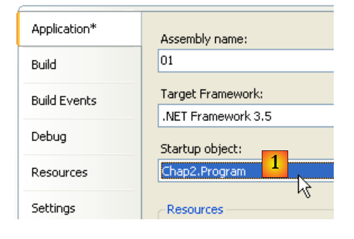
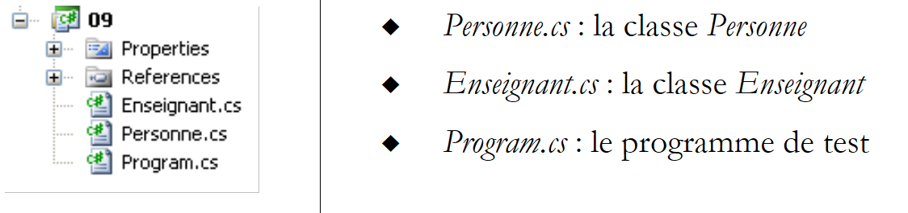
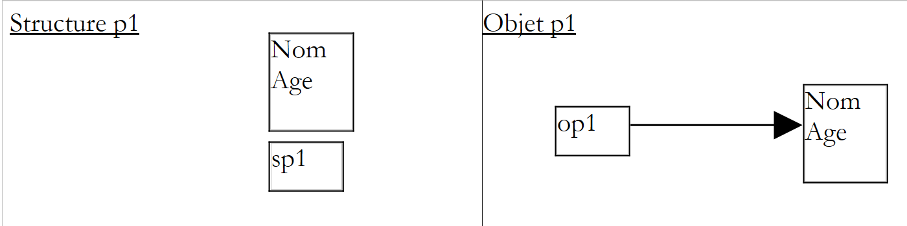
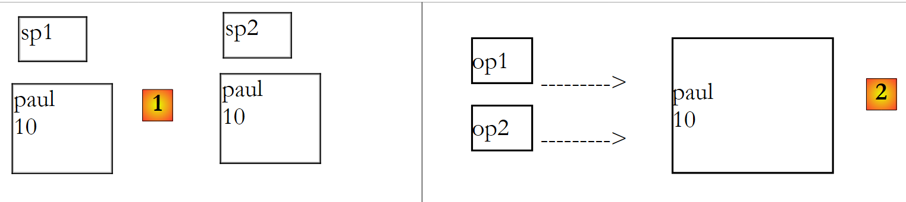

4. Classi, strutture, interfacce
4.1. L'oggetto nell'esempio
4.1.1. Nozioni generali
Affrontiamo ora, attraverso un esempio, la programmazione orientata agli oggetti. Un oggetto è un'entità che contiene dati che ne definiscono lo stato (chiamati campi, attributi, ...) e funzioni (chiamate metodi). Un oggetto viene creato secondo un modello chiamato classe:
public class C1{
Type1 p1; // campo p1
Type2 p2; // campo p2
…
Type3 m3(…){ // metodo m3
…
}
Type4 m4(…){ // metodo m4
…
}
…
}
Partendo dalla classe precedente C1, è possibile creare numerosi oggetti O1, O2,… Tutti avranno i campi p1, p2,… e i metodi m3, m4,… Ma avranno valori diversi per i loro campi pi, avendo così ciascuno uno stato proprio. Se o1 è un oggetto di tipo C1, o1.p1 indica la proprietà p1 di o1 e o1.m1 indica il metodo m1 di O1.
Consideriamo un primo modello di oggetto: la classe Personne.
4.1.2. Creazione del progetto C#
Negli esempi precedenti, in un progetto era presente un unico file sorgente: Program.cs. D'ora in poi, potremo avere più file sorgente nello stesso progetto. Mostriamo come procedere.
 |
In [1], create un nuovo progetto. In [2], selezionate "Applicazione console". In [3], lasciate il valore predefinito. In [4], confermate. In [5], il progetto che è stato generato. Il contenuto di Program.cs è il seguente:
using System;
using System.Collections.Generic;
using System.Linq;
using System.Text;
namespace ConsoleApplication1 {
class Program {
static void Main(string[] args) {
}
}
}
Salviamo il progetto creato:
 |
In [1], l'opzione di salvataggio. In [2], specificare la cartella in cui salvare il progetto. In [3], assegnare un nome al progetto. In [5], specificare che si desidera creare una soluzione. Una soluzione è un insieme di progetti. In [4], assegnare un nome alla soluzione. In [6], confermare il salvataggio.
 |
In [1], il progetto salvato. In [2], aggiungere un nuovo elemento al progetto.
 |
In [1], specificare che si desidera aggiungere una classe. In [2], il nome della classe. In [3], confermare le informazioni. In [4], il progetto [01] ha un nuovo file sorgente Personne.cs:
using System;
using System.Collections.Generic;
using System.Linq;
using System.Text;
namespace ConsoleApplication1 {
class Personne {
}
}
Modifichiamo lo spazio dei nomi di ciascuno dei file sorgente in Chap2 ed eliminiamo l’importazione degli spazi dei nomi non necessari:
using System;
namespace Chap2 {
class Personne {
}
}
using System;
namespace Chap2 {
class Program {
static void Main(string[] args) {
}
}
}
4.1.3. Definizione della classe Persona
La definizione della classe Personne nel file sorgente [Personne.cs] sarà la seguente:
using System;
namespace Chap2 {
public class Personne {
// attributi
private string prenom;
private string nom;
private int age;
// metodo
public void Initialise(string P, string N, int age) {
this.prenom = P;
this.nom = N;
this.age = age;
}
// metodo
public void Identifie() {
Console.WriteLine("[{0}, {1}, {2}]", prenom, nom, age);
}
}
}
Qui abbiamo la definizione di una classe, quindi di un tipo di dati. Quando creeremo variabili di questo tipo, le chiameremo oggetti o istanze di classe. Una classe è quindi uno stampo a partire dal quale vengono costruiti gli oggetti.
I membri o campi di una classe possono essere dati (attributi), metodi (funzioni) o proprietà. Le proprietà sono metodi particolari che servono a conoscere o impostare il valore degli attributi dell’oggetto. Questi campi possono essere accompagnati da una delle tre parole chiave seguenti:
Un campo privato (private) è accessibile solo dai metodi interni della classe | |
Un campo pubblico (public) è accessibile da qualsiasi metodo, definito o meno all’interno della classe | |
Un campo protetto (protected) è accessibile solo tramite i metodi interni della classe o di un oggetto derivato (si veda più avanti il concetto di ereditarietà). |
In generale, i dati di una classe sono dichiarati privati, mentre i suoi metodi e le sue proprietà sono dichiarati pubblici. Ciò significa che l'utente di un oggetto (il programmatore)
- non avrà accesso diretto ai dati privati dell’oggetto
- potrà ricorrere ai metodi pubblici dell’oggetto e in particolare a quelli che consentiranno l’accesso ai suoi dati privati.
La sintassi per la dichiarazione di una classe C è la seguente:
public class C{
private donnée ou méthode ou propriété privée;
public donnée ou méthode ou propriété publique;
protected donnée ou méthode ou propriété protégée;
}
L'ordine di dichiarazione degli attributi private, protected e public è arbitrario.
4.1.4. Il metodo Initialise
Torniamo alla nostra classe Personne dichiarata come:
using System;
namespace Chap2 {
public class Personne {
// attributi
private string prenom;
private string nom;
private int age;
// metodo
public void Initialise(string p, string n, int age) {
this.prenom = p;
this.nom = n;
this.age = age;
}
// metodo
public void Identifie() {
Console.WriteLine("[{0}, {1}, {2}]", prenom, nom, age);
}
}
}
Qual è la funzione del metodo Initialise? Poiché nom, prenom e age sono dati privati della classe Personne, le istruzioni:
sono illegali. Dobbiamo inizializzare un oggetto di tipo Personne tramite un metodo pubblico. Questo è il ruolo del metodo Initialise. Scriveremo:
La sintassi p1.Initialise è corretta poiché Initialise è di accesso pubblico.
4.1.5. L'operatore new
La sequenza di istruzioni
non è corretta. L'istruzione
dichiara p1 come riferimento a un oggetto di tipo Personne. Questo oggetto non esiste ancora e quindi p1 non è inizializzato. È come se si scrivesse:
dove si indica esplicitamente con la parola chiave null che la variabile p1 non fa ancora riferimento ad alcun oggetto. Quando poi si scrive
si richiama il metodo Initialise dell’oggetto a cui fa riferimento p1. Tuttavia, questo oggetto non esiste ancora e il compilatore segnalerà l’errore. Affinché p1 faccia riferimento a un oggetto, occorre scrivere:
Ciò ha l'effetto di creare un oggetto di tipo Personne non ancora inizializzato: gli attributi nom e prenom, che sono riferimenti a oggetti di tipo String, avranno il valore null, e age assumerà il valore 0. Esiste quindi un’inizializzazione predefinita. Ora che p1 fa riferimento a un oggetto, l’istruzione di inizializzazione di tale oggetto
è valida.
4.1.6. La parola chiave this
Diamo un'occhiata al codice del metodo initialise:
public void Initialise(string p, string n, int age) {
this.prenom = p;
this.nom = n;
this.age = age;
}
L'istruzione this.prenom=p significa che l'attributo prenom dell'oggetto corrente (this) riceve il valore p. La parola chiave this indica l'oggetto corrente: quello in cui si trova il metodo eseguito. Come lo si riconosce? Vediamo come avviene l'inizializzazione dell'oggetto a cui fa riferimento p1 nel programma chiamante:
Viene chiamato il metodo Initialise dell’oggetto p1. Quando in questo metodo si fa riferimento all’oggetto this, in realtà si fa riferimento all’oggetto p1. Il metodo Initialise avrebbe potuto essere scritto anche come segue:
public void Initialise(string p, string n, int age) {
prenom = p;
nom = n;
this.age = age;
}
Quando un metodo di un oggetto fa riferimento a un attributo A di tale oggetto, la notazione this.A è implicita. È necessario utilizzarla esplicitamente in caso di conflitto tra identificatori. È il caso dell'istruzione:
this.age=age;
dove age indica un attributo dell’oggetto corrente e il parametro age ricevuto dal metodo. È quindi necessario risolvere l’ambiguità indicando l’attributo age come this.age.
4.1.7. Un programma di prova
Ecco un breve programma di test. È scritto nel file sorgente [Program.cs]:
using System;
namespace Chap2 {
class P01 {
static void Main() {
Personne p1 = new Personne();
p1.Initialise("Jean", "Dupont", 30);
p1.Identifie();
}
}
}
Prima di eseguire il progetto [01], potrebbe essere necessario specificare il file sorgente da eseguire:
 |
Nelle proprietà del progetto [01], si indica in [1] la classe da eseguire.
I risultati ottenuti dall'esecuzione sono i seguenti:
4.1.8. Un altro metodo Initialise
Consideriamo sempre la classe Personne e aggiungiamo ad essa il seguente metodo:
public void Initialise(Personne p) {
prenom = p.prenom;
nom = p.nom;
age = p.age;
}
Ora abbiamo due metodi con il nome Initialise: ciò è consentito purché accettino parametri diversi. In questo caso è così. Il parametro è ora un riferimento p a una persona. Gli attributi della persona p vengono quindi assegnati all’oggetto corrente (this). Si noti che il metodo Initialise ha accesso diretto agli attributi dell’oggetto p, sebbene questi siano di tipo private. Questo vale sempre: un oggetto o1 di una classe C ha sempre accesso agli attributi degli oggetti della stessa classe C.
Ecco un test della nuova classe Personne:
using System;
namespace Chap2 {
class Program {
static void Main() {
Personne p1 = new Personne();
p1.Initialise("Jean", "Dupont", 30);
p1.Identifie();
Personne p2 = new Personne();
p2.Initialise(p1);
p2.Identifie();
}
}
}
e i relativi risultati:
4.1.9. Costruttori della classe Persona
Un costruttore è un metodo che porta il nome della classe e che viene chiamato al momento della creazione dell'oggetto. Generalmente viene utilizzato per inizializzarlo. È un metodo che può accettare argomenti ma che non restituisce alcun risultato. Il suo prototipo o la sua definizione non sono preceduti da alcun tipo (nemmeno void).
Se una classe C ha un costruttore che accetta n argomenti argi, la dichiarazione e l’inizializzazione di un oggetto di questa classe potranno avvenire nella forma:
oppure
Quando una classe C ha uno o più costruttori, è obbligatorio utilizzare uno di questi costruttori per creare un oggetto di tale classe. Se una classe C non ha alcun costruttore, ne ha uno predefinito, ovvero il costruttore senza parametri: public C(). Gli attributi dell'oggetto vengono quindi inizializzati con i valori predefiniti. È ciò che è accaduto nei programmi precedenti, in cui avevamo scritto:
Creiamo due costruttori per la nostra classe Personne:
using System;
namespace Chap2 {
public class Personne {
// attributi
private string prenom;
private string nom;
private int age;
// costruttori
public Personne(String p, String n, int age) {
Initialise(p, n, age);
}
public Personne(Personne P) {
Initialise(P);
}
// metodo
public void Initialise(string p, string n, int age) {
...
}
public void Initialise(Personne p) {
...
}
// metodo
public void Identifie() {
Console.WriteLine("[{0}, {1}, {2}]", prenom, nom, age);
}
}
}
I nostri due costruttori si limitano a richiamare i metodi Initialise studiati in precedenza. Ricordiamo che quando in un costruttore si trova, ad esempio, la notazione Initialise(p), il compilatore la traduce in this.Initialise(p). All’interno del costruttore, il metodo Initialise viene quindi chiamato per operare sull’oggetto a cui fa riferimento this, ovvero l’oggetto corrente, quello che si sta costruendo.
Ecco un breve programma di prova:
using System;
namespace Chap2 {
class Program {
static void Main() {
Personne p1 = new Personne("Jean", "Dupont", 30);
p1.Identifie();
Personne p2 = new Personne(p1);
p2.Identifie();
}
}
}
e i risultati ottenuti:
4.1.10. I riferimenti agli oggetti
Utilizziamo sempre la stessa classe Personne. Il programma di test diventa il seguente:
using System;
namespace Chap2 {
class Program2 {
static void Main() {
// p1
Personne p1 = new Personne("Jean", "Dupont", 30);
Console.Write("p1="); p1.Identifie();
// p2 fa riferimento allo stesso oggetto di p1
Personne p2 = p1;
Console.Write("p2="); p2.Identifie();
// p3 fa riferimento a un oggetto che sarà una copia dell'oggetto a cui fa riferimento p1
Personne p3 = new Personne(p1);
Console.Write("p3="); p3.Identifie();
// si modifica lo stato dell'oggetto a cui fa riferimento p1
p1.Initialise("Micheline", "Benoît", 67);
Console.Write("p1="); p1.Identifie();
// poiché p2=p1, l'oggetto a cui fa riferimento p2 deve aver cambiato stato
Console.Write("p2="); p2.Identifie();
// poiché p3 non fa riferimento allo stesso oggetto di p1, l'oggetto a cui fa riferimento p3 non deve essere cambiato
Console.Write("p3="); p3.Identifie();
}
}
}
I risultati ottenuti sono i seguenti:
Quando si dichiara la variabile p1 con
p1 fa riferimento all’oggetto Personne("Jean","Dupont",30) ma non è l’oggetto stesso. In C, si direbbe che si tratta di un puntatore, c.a.d, all’indirizzo dell’oggetto creato. Se poi si scrive:
non è l’oggetto Personne("Jean","Dupont",30) a essere modificato, ma è il riferimento p1 a cambiare valore. L’oggetto Personne("Jean","Dupont",30) andrà “perso” se non è referenziato da nessun’altra variabile.
Quando si scrive:
si inizializza il puntatore p2: esso “punta” allo stesso oggetto (indica lo stesso oggetto) del puntatore p1. Pertanto, se si modifica l’oggetto “puntato” (o referenziato) da p1, si modifica anche quello referenziato da p2.
Quando si scrive:
viene creato un nuovo oggetto Personne. Questo nuovo oggetto sarà referenziato da p3. Se si modifica l’oggetto “puntato” (o referenziato) da p1, non si modifica in alcun modo quello referenziato da p3. È quanto dimostrano i risultati ottenuti.
4.1.11. Passaggio di parametri di tipo riferimento a oggetto
Nel capitolo precedente abbiamo esaminato le modalità di passaggio dei parametri di una funzione quando questi rappresentavano un tipo C# semplice rappresentato da una struttura .NET. Vediamo cosa succede quando il parametro è un riferimento a un oggetto:
using System;
using System.Text;
namespace Chap1 {
class P12 {
public static void Main() {
// esempio 4
StringBuilder sb0 = new StringBuilder("essai0"), sb1 = new StringBuilder("essai1"), sb2 = new StringBuilder("essai2"), sb3;
Console.WriteLine("Dans fonction appelante avant appel : sb0={0}, sb1={1}, sb2={2}", sb0,sb1, sb2);
ChangeStringBuilder(sb0, sb1, ref sb2, out sb3);
Console.WriteLine("Dans fonction appelante après appel : sb0={0}, sb1={1}, sb2={2}, sb3={3}", sb0, sb1, sb2, sb3);
}
private static void ChangeStringBuilder(StringBuilder sbf0, StringBuilder sbf1, ref StringBuilder sbf2, out StringBuilder sbf3) {
Console.WriteLine("Début fonction appelée : sbf0={0}, sbf1={1}, sbf2={2}", sbf0,sbf1, sbf2);
sbf0.Append("*****");
sbf1 = new StringBuilder("essai1*****");
sbf2 = new StringBuilder("essai2*****");
sbf3 = new StringBuilder("essai3*****");
Console.WriteLine("Fin fonction appelée : sbf0={0}, sbf1={1}, sbf2={2}, sbf3={3}", sbf0, sbf1, sbf2, sbf3);
}
}
}
- riga 8: definisce 3 oggetti di tipo StringBuilder. Un oggetto StringBuilder è adiacente a un oggetto string. Quando si manipola un oggetto string, si ottiene in cambio un nuovo oggetto string. Pertanto, nella sequenza di codice:
La riga 1 crea un oggetto string in memoria e s è il suo indirizzo. Nella riga 2, s.ToUpperCase() crea un altro oggetto string in memoria. Pertanto, tra le righe 1 e 2, s ha cambiato valore (ora punta al nuovo oggetto). La classe StringBuilder, invece, consente di trasformare una stringa senza che venga creato un secondo oggetto. È l’esempio riportato sopra:
- riga 8: 4 riferimenti [sb0, sb1, sb2, sb3] a oggetti di tipo StringBuilder
- riga 10: sono stati passati al metodo ChangeStringBuilder con modalità diverse: sb0, sb1 con la modalità predefinita, sb2 con la parola chiave ref, sb3 con la parola chiave out.
- righe 15-22: un metodo che ha i parametri formali [sbf0, sbf1, sbf2, sbf3]. Le relazioni tra i parametri formali sbfi e quelli effettivi sbi sono le seguenti:
- sbf0 e sb0 sono, all’avvio del metodo, due riferimenti distinti che puntano allo stesso oggetto (passaggio per valore degli indirizzi)
- lo stesso vale per sbf1 e sb1
- sbf2 e sb2, all'avvio del metodo, sono lo stesso riferimento allo stesso oggetto (parola chiave ref)
- sbf3 e sb3, dopo l'esecuzione del metodo, sono lo stesso riferimento allo stesso oggetto (parola chiave out)
I risultati ottenuti sono i seguenti:
Spiegazioni:
- sb0 e sbf0 sono due riferimenti distinti allo stesso oggetto. Quest’ultimo è stato modificato tramite sbf0 - riga 3. Tale modifica è visibile tramite sb0 - riga 4.
- sb1 e sbf1 sono due riferimenti distinti allo stesso oggetto. Il valore di sbf1 viene modificato all’interno del metodo e ora punta a un nuovo oggetto - riga 3. Ciò non modifica in alcun modo il valore di sb1, che continua a puntare allo stesso oggetto - riga 4.
- sb2 e sbf2 sono lo stesso riferimento allo stesso oggetto. Il valore di sbf2 viene modificato all’interno del metodo e ora punta a un nuovo oggetto – riga 3. Poiché sbf2 e sb2 sono la stessa entità, anche il valore di sb2 è stato modificato e sb2 punta allo stesso oggetto di sbf2 - righe 3 e 4.
- prima della chiamata al metodo, sb3 non aveva alcun valore. Dopo il metodo, sb3 riceve il valore di sbf3. Abbiamo quindi due riferimenti allo stesso oggetto - righe 3 e 4
4.1.12. Gli oggetti temporanei
In un'espressione è possibile richiamare esplicitamente il costruttore di un oggetto: quest'ultimo viene creato, ma non vi abbiamo accesso (ad esempio per modificarlo). Questo oggetto temporaneo viene creato per le esigenze di valutazione dell'espressione e poi abbandonato. Lo spazio di memoria che occupava verrà automaticamente recuperato in seguito da un programma chiamato “garbage collector”, il cui ruolo è quello di recuperare lo spazio di memoria occupato da oggetti che non sono più referenziati dai dati del programma.
Consideriamo il seguente nuovo programma di prova:
using System;
namespace Chap2 {
class Program {
static void Main() {
new Personne(new Personne("Jean", "Dupont", 30)).Identifie();
}
}
}
e modifichiamo i costruttori della classe Personne in modo che visualizzino un messaggio:
// costruttori
public Personne(String p, String n, int age) {
Console.WriteLine("Constructeur Personne(string, string, int)");
Initialise(p, n, age);
}
public Personne(Personne P) {
Console.Out.WriteLine("Constructeur Personne(Personne)");
Initialise(P);
}
Otteniamo i seguenti risultati:
che mostrano la creazione successiva dei due oggetti temporanei.
4.1.13. Metodi di lettura e scrittura degli attributi privati
Aggiungiamo alla classe Personne i metodi necessari per leggere o modificare lo stato degli attributi degli oggetti:
using System;
namespace Chap2 {
public class Personne {
// attributi
private string prenom;
private string nom;
private int age;
// costruttori
public Personne(String p, String n, int age) {
Console.WriteLine("Constructeur Personne(string, string, int)");
Initialise(p, n, age);
}
public Personne(Personne p) {
Console.Out.WriteLine("Constructeur Personne(Personne)");
Initialise(p);
}
// metodo
public void Initialise(string p, string n, int age) {
this.prenom = p;
this.nom = n;
this.age = age;
}
public void Initialise(Personne p) {
prenom = p.prenom;
nom = p.nom;
age = p.age;
}
// accessori
public String GetPrenom() {
return prenom;
}
public String GetNom() {
return nom;
}
public int GetAge() {
return age;
}
//modificatori
public void SetPrenom(String P) {
this.prenom = P;
}
public void SetNom(String N) {
this.nom = N;
}
public void SetAge(int age) {
this.age = age;
}
// metodo
public void Identifie() {
Console.WriteLine("[{0}, {1}, {2}]", prenom, nom, age);
}
}
}
Testiamo la nuova classe con il seguente programma:
using System;
namespace Chap2 {
class Program {
static void Main(string[] args) {
Personne p = new Personne("Jean", "Michelin", 34);
Console.Out.WriteLine("p=(" + p.GetPrenom() + "," + p.GetNom() + "," + p.GetAge() + ")");
p.SetAge(56);
Console.Out.WriteLine("p=(" + p.GetPrenom() + "," + p.GetNom() + "," + p.GetAge() + ")");
}
}
}
e otteniamo i seguenti risultati:
4.1.14. Le proprietà
Esiste un altro modo per accedere agli attributi di una classe: creare delle proprietà. Queste ci consentono di manipolare gli attributi privati come se fossero pubblici.
Consideriamo la seguente classe Personne, in cui i precedenti accessori e modificatori sono stati sostituiti da proprietà in lettura e scrittura:
using System;
namespace Chap2 {
public class Personne {
// attributi
private string prenom;
private string nom;
private int age;
// costruttori
public Personne(String p, String n, int age) {
Initialise(p, n, age);
}
public Personne(Personne p) {
Initialise(p);
}
// metodo
public void Initialise(string p, string n, int age) {
this.prenom = p;
this.nom = n;
this.age = age;
}
public void Initialise(Personne p) {
prenom = p.prenom;
nom = p.nom;
age = p.age;
}
// proprietà
public string Prenom {
get { return prenom; }
set {
// nome valido?
if (value == null || value.Trim().Length == 0) {
throw new Exception("prénom (" + value + ") invalide");
} else {
prenom = value;
}
}//if
}//nome
public string Nom {
get { return nom; }
set {
// cognome valido?
if (value == null || value.Trim().Length == 0) {
throw new Exception("nom (" + value + ") invalide");
} else { nom = value; }
}//if
}//cognome
public int Age {
get { return age; }
set {
// età valida?
if (value >= 0) {
age = value;
} else
throw new Exception("âge (" + value + ") invalide");
}//se
}//età
// metodo
public void Identifie() {
Console.WriteLine("[{0}, {1}, {2}]", prenom, nom, age);
}
}
}
Una proprietà consente di leggere (get) o impostare (set) il valore di un attributo. Una proprietà viene dichiarata come segue:
dove Type deve essere il tipo dell'attributo gestito dalla proprietà. Essa può avere due metodi denominati get e set. Il metodo get ha solitamente il compito di restituire il valore dell'attributo che gestisce (potrebbe restituire qualcos'altro, nulla lo impedisce). Il metodo set riceve un parametro denominato value che normalmente assegna all’attributo che gestisce. Può approfittarne per verificare la validità del valore ricevuto ed eventualmente generare un’eccezione se il valore risulta non valido. È ciò che viene fatto in questo caso.
Come vengono chiamati questi metodi get e set? Consideriamo il seguente programma di test:
using System;
namespace Chap2 {
class Program {
static void Main(string[] args) {
Personne p = new Personne("Jean", "Michelin", 34);
Console.Out.WriteLine("p=(" + p.Prenom + "," + p.Nom + "," + p.Age + ")");
p.Age = 56;
Console.Out.WriteLine("p=(" + p.Prenom + "," + p.Nom + "," + p.Age + ")");
try {
p.Age = -4;
} catch (Exception ex) {
Console.Error.WriteLine(ex.Message);
}//try-catch
}
}
}
Nell’istruzione
Console.Out.WriteLine("p=(" + p.Prenom + "," + p.Nom + "," + p.Age + ")");
si cerca di ottenere i valori delle proprietà Prenom, Nom e Age della persona p. Viene quindi chiamato il metodo get di queste proprietà, che restituisce il valore dell’attributo da esse gestito.
Nell'istruzione
si desidera impostare il valore della proprietà Age. Viene quindi chiamato il metodo set di questa proprietà, che riceverà il valore 56 nel suo parametro value.
Una proprietà P di una classe C che definisca solo il metodo get è detta di sola lettura. Se c è un oggetto della classe C, l’operazione c.P=valore verrà quindi rifiutata dal compilatore.
L’esecuzione del programma di test precedente fornisce i seguenti risultati:
Le proprietà ci consentono quindi di manipolare gli attributi privati come se fossero pubblici. Un’altra caratteristica delle proprietà è che possono essere utilizzate insieme a un costruttore secondo la seguente sintassi:
Questa sintassi è equivalente al codice seguente:
L'ordine delle proprietà non ha importanza. Ecco un esempio.
Alla classe Personne viene aggiunto un nuovo costruttore senza parametri:
public Personne() {
}
Il costruttore non inizializza i membri dell'oggetto. Si tratta del cosiddetto costruttore predefinito, che viene utilizzato quando la classe non definisce alcun costruttore.
Il codice seguente crea e inizializza (riga 6) un nuovo oggetto Personne utilizzando la sintassi illustrata in precedenza:
using System;
namespace Chap2 {
class Program {
static void Main(string[] args) {
Personne p2 = new Personne { Age = 7, Prenom = "Arthur", Nom = "Martin" };
Console.WriteLine("p2=({0},{1},{2})", p2.Prenom, p2.Nom, p2.Age);
}
}
}
Nella riga 6 sopra riportata viene utilizzato il costruttore senza parametri Personne(). In questo caso specifico, si sarebbe potuto scrivere anche
Personne p2 = new Personne() { Age = 7, Prenom = "Arthur", Nom = "Martin" };
ma le parentesi del costruttore senza parametri Personne() non sono obbligatorie in questa sintassi.
I risultati dell'esecuzione sono i seguenti:
In molti casi, i metodi get e set di una proprietà si limitano a leggere e scrivere un campo privato senza ulteriori elaborazioni. In questo scenario è quindi possibile utilizzare una proprietà automatica dichiarata come segue:
Il campo privato associato alla proprietà non viene dichiarato. Viene generato automaticamente dal compilatore. È accessibile solo tramite la sua proprietà. Pertanto, invece di scrivere:
private string prenom;
...
// proprietà associata
public string Prenom {
get { return prenom; }
set {
// nome valido?
if (value == null || value.Trim().Length == 0) {
throw new Exception("prénom (" + value + ") invalide");
} else {
prenom = value;
}
}//if
}//nome
si potrà scrivere:
senza dichiarare il campo privato prenom. La differenza tra le due proprietà precedenti è che la prima verifica la validità del nome in set, mentre la seconda non effettua alcuna verifica.
L'utilizzo della proprietà automatica Prenom equivale a dichiarare un campo Prenom pubblico:
Ci si potrebbe chiedere se vi sia una differenza tra le due dichiarazioni. Dichiarare public come campo di una classe è sconsigliato. Ciò viola il concetto di incapsulamento dello stato di un oggetto, stato che deve essere privato ed esposto tramite metodi pubblici.
Se la proprietà automatica viene dichiarata come virtuelle,, può quindi essere ridefinita in una classe figlia:
class Class1 {
public virtual string Prop { get; set; }
}
class Class2 : Class1 {
public override string Prop { get { return base.Prop; } set {... } }
}
Riga 2 sopra, la classe figlia Class2 può inserire nella classe set, del codice che verifica la validità del valore assegnato alla proprietà automatica base.Prop della classe madre Class1.
4.1.15. Metodi e attributi di classe
Supponiamo di voler contare il numero di oggetti Personne creati in un'applicazione. Si potrebbe gestire manualmente un contatore, ma si rischia di tralasciare gli oggetti temporanei creati qua e là. Sembrerebbe più sicuro includere nei costruttori della classe Personne un’istruzione che incrementi un contatore. Il problema è passare un riferimento a questo contatore affinché il costruttore possa incrementarlo: è necessario passare loro un nuovo parametro. Si può anche includere il contatore nella definizione della classe. Poiché si tratta di un attributo della classe stessa e non di una particolare istanza di tale classe, lo si dichiara in modo diverso con la parola chiave static:
private static long nbPersonnes;
Per fare riferimento ad esso, si scrive Personne.nbPersonnes per indicare che si tratta di un attributo della classe Personne stessa. In questo caso, abbiamo creato un attributo privato a cui non si avrà accesso diretto al di fuori della classe. Creiamo quindi una proprietà pubblica per consentire l’accesso all’attributo di classe nbPersonnes. Per impostare il valore di nbPersonnes, il metodo get di questa proprietà non necessita di un oggetto Personne specifico: infatti nbPersonnes è l’attributo di un’intera classe. È quindi necessaria una proprietà dichiarata anch’essa come static:
public static long NbPersonnes {
get { return nbPersonnes; }
}
che dall’esterno verrà richiamata con la sintassi Personne.NbPersonnes. Ecco un esempio.
La classe Personne diventa la seguente:
using System;
namespace Chap2 {
public class Personne {
// attributi di classe
private static long nbPersonnes;
public static long NbPersonnes {
get { return nbPersonnes; }
}
// attributi di istanza
private string prenom;
private string nom;
private int age;
// costruttori
public Personne(String p, String n, int age) {
Initialise(p, n, age);
nbPersonnes++;
}
public Personne(Personne p) {
Initialise(p);
nbPersonnes++;
}
...
}
Alle righe 20 e 24, i costruttori incrementano il campo statico della riga 7.
Con il seguente programma:
using System;
namespace Chap2 {
class Program {
static void Main(string[] args) {
Personne p1 = new Personne("Jean", "Dupont", 30);
Personne p2 = new Personne(p1);
new Personne(p1);
Console.WriteLine("Nombre de personnes créées : " + Personne.NbPersonnes);
}
}
}
si ottengono i seguenti risultati:
4.1.16. Un array di persone
Un oggetto è un dato come un altro e, in quanto tale, più oggetti possono essere raggruppati in un array:
using System;
namespace Chap2 {
class Program {
static void Main(string[] args) {
// un array di persone
Personne[] amis = new Personne[3];
amis[0] = new Personne("Jean", "Dupont", 30);
amis[1] = new Personne("Sylvie", "Vartan", 52);
amis[2] = new Personne("Neil", "Armstrong", 66);
// visualizzazione
foreach (Personne ami in amis) {
ami.Identifie();
}
}
}
}
- riga 7: crea un array di 3 elementi di tipo Personne. Questi 3 elementi sono inizializzati qui con i valori null e c.a.d, poiché non fanno riferimento ad alcun oggetto. Ancora una volta, per convenzione, si parla di «array di oggetti» mentre si tratta semplicemente di un array di riferimenti a oggetti. La creazione dell’array di oggetti, che è esso stesso un oggetto (presenza di new), non crea alcun oggetto del tipo dei suoi elementi: ciò va fatto in seguito.
- righe 8-10: creazione dei 3 oggetti di tipo Personne
- righe 12-14: visualizzazione del contenuto dell'array amis
Si ottengono i seguenti risultati:
4.2. L'ereditarietà attraverso l'esempio
4.2.1. Informazioni generali
Qui affrontiamo il concetto di ereditarietà. Lo scopo dell’ereditarietà è quello di “personalizzare” una classe esistente affinché soddisfi le nostre esigenze. Supponiamo di voler creare una classe Enseignant: un insegnante è una persona particolare. Ha degli attributi che un’altra persona non avrà: la materia che insegna, ad esempio. Ma possiede anche gli attributi di ogni persona: nome, cognome ed età. Un insegnante fa quindi pienamente parte della classe Personne, ma ha degli attributi aggiuntivi. Anziché creare una classe Enseignant partendo da zero, preferiremmo riutilizzare le caratteristiche della classe Personne, adattandole alle peculiarità degli insegnanti. È il concetto di ereditarietà che ci permette di farlo.
Per indicare che la classe Enseignant eredita le proprietà della classe Personne, scriveremo:
Personne è detta classe padre (o madre) e Enseignant classe derivata (o figlia). Un oggetto Enseignant possiede tutte le caratteristiche di un oggetto Personne: ha gli stessi attributi e gli stessi metodi. Questi attributi e metodi della classe genitrice non vengono ripetuti nella definizione della classe figlia: ci si limita a indicare gli attributi e i metodi aggiunti dalla classe figlia:
Supponiamo che la classe Personne sia definita come segue:
using System;
namespace Chap2 {
public class Personne {
// attributi di classe
private static long nbPersonnes;
public static long NbPersonnes {
get { return nbPersonnes; }
}
// attributi dell'istanza
private string prenom;
private string nom;
private int age;
// costruttori
public Personne(String prenom, String nom, int age) {
Nom = nom;
Prenom = prenom;
Age = age;
nbPersonnes++;
Console.WriteLine("Constructeur Personne(string, string, int)");
}
public Personne(Personne p) {
Nom = p.Nom;
Prenom = p.Prenom;
Age = p.Age;
nbPersonnes++;
Console.WriteLine("Constructeur Personne(Personne)");
}
// proprietà
public string Prenom {
get { return prenom; }
set {
// nome valido?
if (value == null || value.Trim().Length == 0) {
throw new Exception("prénom (" + value + ") invalide");
} else {
prenom = value;
}
}//if
}//nome
public string Nom {
get { return nom; }
set {
// cognome valido?
if (value == null || value.Trim().Length == 0) {
throw new Exception("nom (" + value + ") invalide");
} else { nom = value; }
}//se
}//cognome
public int Age {
get { return age; }
set {
// età valida?
if (value >= 0) {
age = value;
} else
throw new Exception("âge (" + value + ") invalide");
}//se
}//età
// proprietà
public string Identite {
get { return String.Format("[{0}, {1}, {2}]", prenom, nom, age);}
}
}
}
Il metodo Identifie è stato sostituito dalla proprietà Identite, di sola lettura, che identifica la persona. Creiamo una classe Enseignant che eredita dalla classe Personne:
using System;
namespace Chap2 {
class Enseignant : Personne {
// attributi
private int section;
// costruttore
public Enseignant(string prenom, string nom, int age, int section)
: base(prenom, nom, age) {
// si memorizza la sezione tramite la proprietà Section
Section = section;
// monitoraggio
Console.WriteLine("Construction Enseignant(string, string, int, int)");
}//costruttore
// proprietà Section
public int Section {
get { return section; }
set { section = value; }
}// Sezione
}
}
La classe Enseignant aggiunge ai metodi e agli attributi della classe Personne:
- riga 4: la classe Enseignant deriva dalla classe Personne
- riga 6: un attributo section che rappresenta il numero di sezione a cui appartiene il docente all'interno del corpo docente (in linea di massima, una sezione per disciplina). Questo attributo privato è accessibile tramite la proprietà pubblica Section delle righe 18-21
- riga 9: un nuovo costruttore che consente di inizializzare tutti gli attributi di un docente
4.2.2. Costruzione di un oggetto Insegnante
Una classe figlia non eredita i costruttori dalla sua classe genitrice. Deve quindi definire i propri costruttori. Il costruttore della classe Enseignant è il seguente:
// costruttore
public Enseignant(string prenom, string nom, int age, int section)
: base(prenom, nom, age) {
// si memorizza la sezione
Section = section;
// monitoraggio
Console.WriteLine("Construction enseignant(string, string, int, int)");
}//costruttore
La dichiarazione
public Enseignant(string prenom, string nom, int age, int section)
: base(prenom, nom, age) {
indica che il costruttore riceve quattro parametri: prenom, nom, age, section e ne passa tre (prenom,nom,age) alla sua classe base, in questo caso la classe Personne. È noto che questa classe dispone di un costruttore Personne(string, string, int) che consentirà di creare una persona con i parametri passati (prenom,nom,age). Una volta completata la creazione della classe base, la creazione dell’oggetto Enseignant prosegue con l’esecuzione del corpo del costruttore:
Si noti che a sinistra del segno = non è stato utilizzato l’attributo section dell’oggetto, bensì la proprietà Section ad esso associata. Ciò consente al costruttore di avvalersi di eventuali controlli di validità che tale metodo potrebbe effettuare. In questo modo si evita di inserirli in due punti diversi: il costruttore e la proprietà.
In sintesi, il costruttore di una classe derivata:
- passa alla propria classe base i parametri di cui questa ha bisogno per essere costruita
- utilizza gli altri parametri per inizializzare gli attributi che gli sono propri
Si sarebbe potuto preferire scrivere:
// costruttore
public Enseignant(string prenom, string nom, int age, int section){
this.prenom=prenom;
this.nom=nom;
this.age=age;
this.section=section;
}
Non è possibile. La classe Personne ha dichiarato privati (private) i suoi tre campi prenom, nom e age. Solo gli oggetti della stessa classe hanno accesso diretto a questi campi. Tutti gli altri oggetti, compresi gli oggetti derivati come in questo caso, devono passare attraverso metodi pubblici per accedervi. La situazione sarebbe stata diversa se la classe Personne avesse dichiarato protetti (protected) i tre campi: in tal caso avrebbe consentito alle classi derivate di avere accesso diretto ai tre campi. Nel nostro esempio, utilizzare il costruttore della classe padre era quindi la soluzione corretta ed è il metodo usuale: durante la creazione di un oggetto figlio, si chiama prima il costruttore dell’oggetto padre, poi si completano le inizializzazioni specifiche dell’oggetto figlio (section nel nostro esempio).
Proviamo a scrivere un primo programma di test [Program.cs]:
using System;
namespace Chap2 {
class Program {
static void Main(string[] args) {
Console.WriteLine(new Enseignant("Jean", "Dupont", 30, 27).Identite);
}
}
}
Questo programma si limita a creare un oggetto Enseignant (new) e a identificarlo. La classe Enseignant non dispone del metodo Identite, ma la sua classe padre ne possiede uno che, per di più, è pubblico: per ereditarietà, esso diventa un metodo pubblico della classe Enseignant.
Il progetto completo è il seguente:
 |
I risultati ottenuti sono i seguenti:
Si nota che:
- un oggetto Personne (riga 1) è stato creato prima dell'oggetto Enseignant (riga 2)
- l'identità ottenuta è quella dell'oggetto Personne
4.2.3. Ridefinizione di un metodo o di una proprietà
Nell’esempio precedente, abbiamo ottenuto l’identità della parte Personne relativa al docente, ma mancano alcune informazioni specifiche della classe Enseignant (la sezione). Si è quindi portati a scrivere una proprietà che consenta di identificare il docente:
using System;
namespace Chap2 {
class Enseignant : Personne {
// attributi
private int section;
// costruttore
public Enseignant(string prenom, string nom, int age, int section)
: base(prenom, nom, age) {
// si memorizza la sezione tramite la proprietà Section
Section = section;
// monitoraggio
Console.WriteLine("Construction Enseignant(string, string, int, int)");
}//costruttore
// proprietà Section
public int Section {
get { return section; }
set { section = value; }
}// sezione
// proprietà Identità
public new string Identite {
get { return String.Format("Enseignant[{0},{1}]", base.Identite, Section); }
}
}
}
Righe 24-26: la proprietà Identite della classe Enseignant si basa sulla proprietà Identite della sua classe madre (base.Identite) (riga 25) per visualizzare la sua parte "Personne", quindi la completa con il campo section, specifico della classe Enseignant. Si noti la dichiarazione della proprietà Identite:
public new string Identite{
Si consideri un oggetto enseignant E. Questo oggetto contiene al suo interno un oggetto Personne:
 |
La proprietà Identite è definita sia nella classe Enseignant che nella sua classe madre Personne. Nella classe figlia Enseignant, la proprietà Identite deve essere preceduta dalla parola chiave new per indicare che si sta ridefinendo una nuova proprietà Identite per la classe Enseignant.
public new string Identite{
La classe Enseignant dispone ora di due proprietà Identite:
- quella ereditata dalla classe padre Personne
- una propria
Se E è un oggetto Enseignant, E.Identite indica la proprietà Identite della classe Enseignant. Si dice che la proprietà Identite della classe figlia ridefinisca o nasconda la proprietà Identite della classe madre. In generale, se O è un oggetto e M è un metodo, per eseguire il metodo O.M, il sistema cerca un metodo M nel seguente ordine:
- nella classe dell’oggetto O
- nella sua classe padre, se ne ha una
- nella classe madre della sua classe madre, se esiste
- ecc…
L’ereditarietà consente quindi di ridefinire nella classe figlia metodi/proprietà con lo stesso nome presenti nella classe madre. È questo che permette di adattare la classe figlia alle proprie esigenze. Insieme al polimorfismo, di cui parleremo più avanti, la ridefinizione di metodi/proprietà rappresenta il principale vantaggio dell’ereditarietà.
Consideriamo lo stesso programma di test di prima:
using System;
namespace Chap2 {
class Program {
static void Main(string[] args) {
Console.WriteLine(new Enseignant("Jean", "Dupont", 30, 27).Identite);
}
}
}
I risultati ottenuti questa volta sono i seguenti:
4.2.4. Il polimorfismo
Consideriamo una linea di classi: C0 ← C1 ← C2 ← … ←Cn
dove Ci ← Cj indica che la classe Cj deriva dalla classe Ci. Ne consegue che la classe Cj possiede tutte le caratteristiche della classe Ci oltre ad altre. Siano Oi oggetti di tipo Ci. È lecito scrivere:
Infatti, per ereditarietà, la classe Cj possiede tutte le caratteristiche della classe Ci oltre ad altre. Pertanto, un oggetto Oj di tipo Cj contiene al suo interno un oggetto di tipo Ci. L’operazione
fa sì che Oi sia un riferimento all’oggetto di tipo Ci contenuto nell’oggetto Oj.
Il fatto che una variabile Oi della classe Ci possa di fatto fare riferimento non solo a un oggetto della classe Ci, ma a qualsiasi oggetto derivato dalla classe Ci,, è chiamato polimorfismo: la capacità di una variabile di fare riferimento a diversi tipi di oggetti.
Facciamo un esempio e consideriamo la seguente funzione indipendente da qualsiasi classe (static):
Si potrebbe anche scrivere
che
In quest'ultimo caso, il parametro formale p di tipo Personne del metodo statico Affiche riceverà un valore di tipo Enseignant. Poiché il tipo Enseignant deriva dal tipo Personne, ciò è consentito.
4.2.5. Ridefinizione e polimorfismo
Completiamo il nostro metodo Affiche:
public static void Affiche(Personne p) {
// visualizza identità di p
Console.WriteLine(p.Identite);
}//visualizza
La proprietà p.Identite restituisce una stringa che identifica l’oggetto Persona p. Cosa succede nell’esempio precedente se il parametro passato al metodo Affiche è un oggetto di tipo Enseignant:
Enseignant e = new Enseignant(...);
Affiche(e);
Esaminiamo il seguente esempio:
using System;
namespace Chap2 {
class Program2 {
static void Main(string[] args) {
// un insegnante
Enseignant e = new Enseignant("Lucile", "Dumas", 56, 61);
Affiche(e);
// una persona
Personne p = new Personne("Jean", "Dupont", 30);
Affiche(p);
}
// cartello
public static void Affiche(Personne p) {
// visualizza l'identità di p
Console.WriteLine(p.Identite);
}//mostra
}
}
I risultati ottenuti sono i seguenti:
L'esecuzione mostra che l'istruzione p.Identite (riga 17) ha eseguito ogni volta la proprietà Identite di un Personne, prima (riga 7) la persona contenuta in Enseignant e, poi (riga 10) la stessa Personne p. Non si è adattata all’oggetto effettivamente passato come parametro a Affiche. Avremmo preferito avere l’identità completa dell’oggetto Enseignant. A tal fine, la notazione p.Identite avrebbe dovuto fare riferimento alla proprietà Identite dell’oggetto effettivamente puntato da p, anziché alla proprietà Identite della parte "Personne" dell’oggetto effettivamente puntato da p.
È possibile ottenere questo risultato dichiarando Identite come proprietà virtuale (virtual) nella classe base Personne:
public virtual string Identite {
get { return String.Format("[{0}, {1}, {2}]", prenom, nom, age); }
}
La parola chiave virtual rende Identite una proprietà virtuale. Questa parola chiave può essere applicata anche ai metodi. Le classi figlie che ridefiniscono una proprietà o un metodo virtuale devono quindi utilizzare la parola chiave override al posto di new per qualificare la proprietà/il metodo ridefinito. Pertanto, nella classe Enseignant, la proprietà Identite viene ridefinita come segue:
public override string Identite {
get { return String.Format("Enseignant[{0},{1}]", base.Identite, Section); }
}
Il programma precedente produce quindi i seguenti risultati:
Questa volta, alla riga 3, abbiamo ottenuto l’identità completa del docente. Ridefiniamo ora un metodo anziché una proprietà. La classe object (alias C# di System.Object) è la classe “madre” di tutte le classi C#. Pertanto, quando si scrive:
si scrive implicitamente:
La classe System.Object definisce un metodo virtuale ToString:
 |
Il metodo ToString restituisce il nome della classe a cui appartiene l'oggetto, come mostra l'esempio seguente:
using System;
namespace Chap2 {
class Program2 {
static void Main(string[] args) {
// un insegnante
Console.WriteLine(new Enseignant("Lucile", "Dumas", 56, 61).ToString());
// una persona
Console.WriteLine(new Personne("Jean", "Dupont", 30).ToString());
}
}
}
I risultati ottenuti sono i seguenti:
Si noti che, sebbene non abbiamo ridefinito il metodo ToString nelle classi Personne e Enseignant, si può comunque constatare che il metodo ToString della classe Object è stato in grado di visualizzare il nome effettivo della classe dell'oggetto.
Ridefiniamo il metodo ToString nelle classi Personne e Enseignant:
// metodo ToString
public override string ToString() {
return Identite;
}
La definizione è la stessa in entrambe le classi. Consideriamo il seguente programma di test:
using System;
namespace Chap2 {
class Program3 {
public static void Main() {
// un insegnante
Enseignant e = new Enseignant("Lucile", "Dumas", 56, 61);
Affiche(e);
// una persona
Personne p = new Personne("Jean", "Dupont", 30);
Affiche(p);
}
// manifesto
public static void Affiche(Personne p) {
// manifesto sull’identità di p
Console.WriteLine(p);
}//Cartellone
}
}
Concentriamoci sul metodo Affiche che accetta come parametro una persona p. Alla riga 15, il metodo WriteLine della classe Console non presenta alcuna variante che accetti un parametro di tipo Personne. Tra le diverse varianti di Writeline, ne esiste una che accetta come parametro un tipo Object. Il compilatore utilizzerà questo metodo, WriteLine(Object o), poiché questa firma indica che il parametro o può essere di tipo Object o derivato. Poiché Object è la classe padre di tutte le classi, qualsiasi oggetto può essere passato come parametro a WriteLine e quindi un oggetto di tipo Personne o Enseignant. Il metodo WriteLine(Object o) scrive o.ToString() nel flusso di scrittura Out. Poiché il metodo ToString è virtuale, se l’oggetto o (di tipo Object o derivato) ha ridefinito il metodo ToString, verrà utilizzato quest’ultimo. Questo è il caso delle classi Personne e Enseignant.
È quanto dimostrano i risultati dell’esecuzione:
4.3. Ridefinire il significato di un operatore per una classe
4.3.1. Introduzione
Consideriamo l'istruzione
dove op1 e op2 sono due operandi. È possibile ridefinire il significato dell'operatore +. Se l'operando op1 è un oggetto della classe C1, è necessario definire un metodo statico nella classe C1 con la seguente firma:
Quando il compilatore incontra l’istruzione
, la traduce in C1.operator+(op1,op2). Il tipo restituito dal metodo operator è importante. Consideriamo infatti l'operazione op1+op2+op3. Essa viene tradotta dal compilatore in (op1+op2)+op3. Sia res12 il risultato di op1+op2. L’operazione che viene eseguita successivamente è res12+op3. Se res12 è di tipo C1, verrà a sua volta tradotto in C1.operator+(res12,op3). Ciò consente di concatenare le operazioni.
È possibile ridefinire anche gli operatori unari che hanno un solo operando. Pertanto, se op1 è un oggetto di tipo C1, l'operazione op1++ può essere ridefinita tramite un metodo statico della classe C1:
Quanto detto vale per la maggior parte degli operatori, con alcune eccezioni:
- gli operatori == e != devono essere ridefiniti contemporaneamente
- gli operatori &&, ||, [], (), +=, -=, ... non possono essere ridefiniti
4.3.2. Un esempio
Si crea una classe ListeDePersonnes derivata dalla classe ArrayList. Questa classe implementa una lista dinamica ed è descritta nel capitolo seguente. Di questa classe utilizziamo solo i seguenti elementi:
- il metodo L.Add(Object o) che consente di aggiungere alla lista L un oggetto o. In questo caso, l’oggetto o sarà un oggetto Personne.
- la proprietà L.Count che fornisce il numero di elementi della lista L
- la notazione L[i] che restituisce l’elemento i della lista L
La classe ListeDePersonnes erediterà tutti gli attributi, i metodi e le proprietà della classe ArrayList. La sua definizione è la seguente:
using System;
using System.Collections;
using System.Text;
namespace Chap2 {
class ListeDePersonnes : ArrayList{
// ridefinizione dell'operatore +, per aggiungere una persona all'elenco
public static ListeDePersonnes operator +(ListeDePersonnes l, Personne p) {
// si aggiunge la persona p alla ListeDePersonnes l
l.Add(p);
// si rende la ListeDePersonnes l
return l;
}// operatore +
// ToString
public override string ToString() {
// restituisce (elemento1, elemento2, ..., elementoN)
// parentesi aperta
StringBuilder listeToString = new StringBuilder("(");
// si percorre la lista di persone (this)
for (int i = 0; i < Count - 1; i++) {
listeToString.Append(this[i]).Append(",");
}//for
// ultimo elemento
if (Count != 0) {
listeToString.Append(this[Count-1]);
}
// parentesi chiusa
listeToString.Append(")");
// si deve restituire una stringa
return listeToString.ToString();
}//ToString
}
}
- riga 6: la classe ListeDePersonnes deriva dalla classe ArrayList
- righe 8-13: definizione dell’operatore + per l’operazione l + p, dove l è di tipo ListeDePersonnes e p è di tipo Personne o derivato.
- riga 10: la persona p viene aggiunta alla lista l. Qui viene utilizzato il metodo Add della classe padre ArrayList.
- riga 12: viene restituito il riferimento all’elenco l per poter concatenare gli operatori + come in l + p1 + p2. L’operazione l+p1+p2 verrà interpretata (priorità degli operatori) come (l+p1)+p2. L'operazione l+p1 restituirà il riferimento l. L'operazione (l+p1)+p2 diventa quindi l+p2, che aggiunge la persona p2 all'elenco di persone l.
- riga 16: ridefiniamo il metodo ToString per visualizzare un elenco di persone nella forma (persona1, persona2, ...) dove personnei è a sua volta il risultato del metodo ToString della classe Personne.
- riga 19: utilizziamo un oggetto di tipo StringBuilder. Questa classe è più adatta della classe string quando è necessario eseguire numerose operazioni sulla stringa di caratteri, in questo caso delle aggiunte. Infatti, ogni operazione su un oggetto string restituisce un nuovo oggetto string, mentre le stesse operazioni su un oggetto StringBuilder modificano l’oggetto senza crearne uno nuovo. Utilizziamo il metodo Append per concatenare le stringhe di caratteri.
- riga 21: si percorrono gli elementi dell'elenco delle persone. Questo elenco è qui indicato con this. Si tratta dell'oggetto corrente su cui viene eseguito il metodo ToString. La proprietà Count è una proprietà della classe padre ArrayList.
- riga 22: l'elemento n. i dell'elenco corrente this è accessibile tramite la notazione this[i]. Anche in questo caso, si tratta di una proprietà della classe ArrayList. Poiché si tratta di aggiungere stringhe, verrà utilizzato il metodo this[i].ToString(). Poiché questo metodo è virtuale, verrà utilizzato il metodo ToString dell’oggetto this, di tipo Personne o derivato.
- riga 31: dobbiamo restituire un oggetto di tipo string (riga 16). La classe StringBuilder dispone di un metodo ToString che consente di passare da un tipo StringBuilder a un tipo string.
Si noti che la classe ListeDePersonnes non dispone di un costruttore. In questo caso, sappiamo che il costruttore
verrà utilizzato. Questo costruttore non fa altro che richiamare il costruttore senza parametri della sua classe padre:
Una classe di test potrebbe essere la seguente:
using System;
namespace Chap2 {
class Program1 {
static void Main(string[] args) {
// un elenco di persone
ListeDePersonnes l = new ListeDePersonnes();
// aggiunta di persone
l = l + new Personne("jean", "martin",10) + new Personne("pauline", "leduc",12);
// visualizzazione
Console.WriteLine("l=" + l);
l = l + new Enseignant("camille", "germain",27,60);
Console.WriteLine("l=" + l);
}
}
}
- riga 7: creazione di un elenco di persone
- riga 9: aggiunta di 2 persone con l'operatore +
- riga 12: aggiunta di un insegnante
- righe 11 e 13: utilizzo del metodo ridefinito ListeDePersonnes.ToString().
I risultati:
4.4. Definizione di un indicizzatore per una classe
Continuiamo qui a utilizzare la classe ListeDePersonnes. Se l è un oggetto ListeDePersonnes, vogliamo poter utilizzare la notazione l[i] per indicare la persona n. i dell’elenco l sia in lettura (Persona p=l[i]) che in scrittura (l[i]=new Persona(...)).
Per poter scrivere l[i], dove l[i] indica un oggetto Personne, dobbiamo definire nella classe ListeDePersonnes il seguente metodo this:
public Personne this[int i] {
get { ... }
set { ... }
}
Il metodo this[int i] viene definito «indicizzatore» poiché attribuisce un significato all’espressione obj[i], che ricorda la notazione degli array, mentre obj non è un array ma un oggetto. Il metodo get del metodo this dell’oggetto obj viene chiamato quando si scrive variabile=obj[i] e il metodo set quando si scrive obj[i]=valore.
La classe ListeDePersonnes deriva dalla classe ArrayList, che a sua volta dispone di un indicizzatore:
Esiste un conflitto tra il metodo this della classe ListeDePersonnes:
public Personne this[int i]
e il metodo this della classe ArrayList
public object this[int i]
poiché hanno lo stesso nome e accettano lo stesso tipo di parametro (int). Per indicare che il metodo this della classe ListeDePersonnes “nasconde” il metodo omonimo della classe ArrayList, è necessario aggiungere la parola chiave new alla dichiarazione dell’indicizzatore di ListeDePersonnes. Si scriverà quindi:
public new Personne this[int i]{
get { ... }
set { ... }
}
Completiamo questo metodo. Il metodo this.get viene chiamato quando si scrive, ad esempio, variable=l[i], dove l è di tipo ListeDePersonnes. A questo punto occorre restituire la persona n. i dell’elenco l. Ciò avviene con la notazione base[i], che rende l’oggetto n. i della classe ArrayList sottostante alla classe ListeDePersonnes. Poiché l’oggetto restituito è di tipo Object, è necessario un transtypage verso la classe Personne.
public new Personne this[int i]{
get { return (Personne) base[i]; }
set { ... }
}
Il metodo set viene chiamato quando si scrive l[i]=p, dove p è un Personne. Si tratta quindi di assegnare la persona p all’elemento i della lista l.
public new Personne this[int i]{
get { ... }
set { base[i]=value; }
}
In questo caso, la persona p, rappresentata dalla parola chiave value, è assegnata all'elemento n. i della classe di base ArrayList.
L'indicizzatore della classe ListeDePersonnes sarà quindi il seguente:
public new Personne this[int i]{
get { return (Personne) base[i]; }
set { base[i]=value; }
}
Ora, si desidera poter scrivere anche «Persona p=l["nom"]», c.a.d e indicizzare l’elenco l non più tramite un numero di elemento, ma tramite il nome di una persona. A tal fine si definisce un nuovo indicizzatore:
// ricerca per nome
public int this[string nom] {
get {
// ricerca della persona
for (int i = 0; i < Count; i++) {
if (((Personne)base[i]).Nom == nom)
return i;
}//for
return -1;
}//get
}
La prima riga
public int this[string nom]
indica che si indicizza la classe ListeDePersonnes tramite una stringa di caratteri nom e che il risultato di l[nom] è un numero intero. Questo numero intero corrisponderà alla posizione nell'elenco della persona con il nome nom oppure a -1 se tale persona non è presente nell'elenco. Si definisce solo la proprietà get,, impedendo così l’assegnazione l["nom"]=valore, che avrebbe richiesto la definizione della proprietà set. La parola chiave new non è necessaria nella dichiarazione dell'indicizzatore poiché la classe base ArrayList non definisce alcun indicizzatore this[string].
Nel corpo di get, si scorre l'elenco delle persone alla ricerca del nome passato come parametro. Se lo si trova nella posizione i, si restituisce i, altrimenti si restituisce -1.
Il programma di test precedente viene completato come segue:
using System;
namespace Chap2 {
class Program2 {
static void Main(string[] args) {
// un elenco di persone
ListeDePersonnes l = new ListeDePersonnes();
// aggiunta di persone
l = l + new Personne("jean", "martin",10) + new Personne("pauline", "leduc",12);
// visualizzazione
Console.WriteLine("l=" + l);
l = l + new Enseignant("camille", "germain",27,60);
Console.WriteLine("l=" + l);
// modifica elemento 1
l[1] = new Personne("franck", "gallon",5);
// visualizzazione elemento 1
Console.WriteLine("l[1]=" + l[1]);
// visualizzazione elenco l
Console.WriteLine("l=" + l);
// ricerca di persone
string[] noms = { "martin", "germain", "xx" };
for (int i = 0; i < noms.Length; i++) {
int inom = l[noms[i]];
if (inom != -1)
Console.WriteLine("Personne(" + noms[i] + ")=" + l[inom]);
else
Console.WriteLine("Personne(" + noms[i] + ") n'existe pas");
}//per
}
}
}
La sua esecuzione produce i seguenti risultati:
4.5. Le strutture
La struttura in C# è analoga a quella del linguaggio C ed è molto simile al concetto di classe. Una struttura è definita come segue:
Nonostante la somiglianza nella sintassi, esistono differenze significative tra classe e struttura. Il concetto di ereditarietà, ad esempio, non esiste nelle strutture. Se si scrive una classe che non deve essere derivata, quali sono le differenze tra struttura e classe che ci aiuteranno a scegliere tra le due? Utilizziamo il seguente esempio per scoprirlo:
using System;
namespace Chap2 {
class Program1 {
static void Main(string[] args) {
// una struttura sp1
SPersonne sp1;
sp1.Nom = "paul";
sp1.Age = 10;
Console.WriteLine("sp1=SPersonne(" + sp1.Nom + "," + sp1.Age + ")");
// una struttura sp2
SPersonne sp2 = sp1;
Console.WriteLine("sp2=SPersonne(" + sp2.Nom + "," + sp2.Age + ")");
// sp2 viene modificato
sp2.Nom = "nicole";
sp2.Age = 30;
// verifica di sp1 e sp2
Console.WriteLine("sp1=SPersonne(" + sp1.Nom + "," + sp1.Age + ")");
Console.WriteLine("sp2=SPersonne(" + sp2.Nom + "," + sp2.Age + ")");
// un oggetto op1
CPersonne op1=new CPersonne();
op1.Nom = "paul";
op1.Age = 10;
Console.WriteLine("op1=CPersonne(" + op1.Nom + "," + op1.Age + ")");
// un oggetto op2
CPersonne op2=op1;
Console.WriteLine("op2=CPersonne(" + op2.Nom + "," + op2.Age + ")");
// op2 è stato modificato
op2.Nom = "nicole";
op2.Age = 30;
// verifica di op1 e op2
Console.WriteLine("op1=CPersonne(" + op1.Nom + "," + op1.Age + ")");
Console.WriteLine("op2=CPersonne(" + op2.Nom + "," + op2.Age + ")");
}
}
// struttura SPersonne
struct SPersonne {
public string Nom;
public int Age;
}
// classe CPersonne
class CPersonne {
public string Nom;
public int Age;
}
}
- righe 38-41: una struttura con due campi pubblici: Nom, Age
- righe 44-47: una classe con due campi pubblici: Nom, Age
Eseguendo questo programma, si ottengono i seguenti risultati:
Laddove in precedenza si utilizzava una classe Personne, ora si utilizza una struttura SPersonne:
struct SPersonne {
public string Nom;
public int Age;
}
La struttura in questo caso non ha un costruttore. Potrebbe averne uno, come vedremo più avanti. Per impostazione predefinita, dispone sempre del costruttore senza parametri, in questo caso SPersonne().
- riga 7 del codice: la dichiarazione
SPersonne sp1;
è equivalente all’istruzione:
SPersonne sp1=new Spersonne();
Viene creata una struttura (Nome,Età) e il valore di sp1 è proprio questa struttura. Nel caso della classe, la creazione dell’oggetto (Nome,Età) deve avvenire esplicitamente tramite l’operatore new (riga 22):
CPersonne op1=new CPersonne();
L'istruzione precedente crea un oggetto CPersonne (più o meno l'equivalente della nostra struttura) e il valore di p1 è quindi l'indirizzo (il riferimento) di tale oggetto.
Riassumiamo
- nel caso della struttura, il valore di sp1 è la struttura stessa
- nel caso della classe, il valore di op1 è l’indirizzo dell’oggetto creato
 |
Quando nel programma si scrive alla riga 12:
SPersonne sp2 = sp1;
viene creata una nuova struttura sp2(Nome,Età) e inizializzata con il valore di sp1,, ovvero la struttura stessa.
 |
La struttura di sp1 viene duplicata in sp2 [1]. Si tratta di una copia per valore. Consideriamo ora l’istruzione alla riga 27:
CPersonne op2=op1;
Nel caso delle classi, il valore di op1 viene copiato in op2, ma poiché tale valore è in realtà l’indirizzo dell’oggetto, quest’ultimo non viene duplicato [2].
Nel caso della struttura [1], se si modifica il valore di sp2 non si modifica il valore di sp1, come dimostra il programma. Nel caso dell’oggetto [2], se si modifica l’oggetto puntato da op2, viene modificato anche quello puntato da op1 poiché si tratta dello stesso oggetto. È quanto dimostrano anche i risultati del programma.
Da queste spiegazioni si ricava quindi che:
- il valore di una variabile di tipo struttura è la struttura stessa
- il valore di una variabile di tipo oggetto è l’indirizzo dell’oggetto a cui punta
Una volta compresa questa differenza fondamentale, la struttura risulta molto simile alla classe, come dimostra il seguente nuovo esempio:
using System;
namespace Chap2 {
// struttura SPersonne
struct SPersonne {
// attributi privati
private string nom;
private int age;
// proprietà
public string Nom {
get { return nom; }
set { nom = value; }
}//nome
public int Age {
get { return age; }
set { age = value; }
}//età
// Costruttore
public SPersonne(string nom, int age) {
this.nom = nom;
this.age = age;
}//costruttore
// ToString
public override string ToString() {
return "SPersonne(" + Nom + "," + Age + ")";
}//ToString
}//struttura
}//spazio dei nomi
- righe 8-9: due campi privati
- righe 12-20: le proprietà pubbliche associate
- righe 23-26: si definisce un costruttore. Da notare che il costruttore senza parametri SPersonne() è sempre presente e non deve essere dichiarato. La sua dichiarazione viene rifiutata dal compilatore. Nel costruttore delle righe 23-26, si potrebbe essere tentati di inizializzare i campi privati nom, age tramite le loro proprietà pubbliche Nom, Age. Ciò viene rifiutato dal compilatore. I metodi della struttura non possono essere utilizzati durante la sua costruzione.
- righe 29-31: ridefinizione del metodo ToString.
Un programma di test potrebbe essere il seguente:
using System;
namespace Chap2 {
class Program1 {
static void Main(string[] args) {
// una persona p1
SPersonne p1=new SPersonne();
p1.Nom="paul";
p1.Age= 10;
Console.WriteLine("p1={0}",p1);
// una persona p2
SPersonne p2 = p1;
Console.WriteLine("p2=" + p2);
// p2 viene modificata
p2.Nom = "nicole";
p2.Age = 30;
// verifica di p1 e p2
Console.WriteLine("p1=" + p1);
Console.WriteLine("p2=" + p2);
// una persona p3
SPersonne p3 = new SPersonne("amandin", 18);
Console.WriteLine("p3=" + p3);
// una persona p4
SPersonne p4 = new SPersonne { Nom = "x", Age = 10 };
Console.WriteLine("p4=" + p4);
}
}
}
- riga 7: si è obbligati a utilizzare esplicitamente il costruttore senza parametri, poiché nella struttura è presente un altro costruttore. Se la struttura non avesse avuto alcun costruttore, l’istruzione
SPersonne p1;
sarebbe stata sufficiente per creare una struttura vuota.
- righe 8-9: la struttura viene inizializzata tramite le sue proprietà pubbliche
- riga 10: il metodo p1.ToString verrà utilizzato all'interno di WriteLine.
- riga 21: creazione di una struttura con il costruttore SPersonne(string, int)
- riga 24: creazione di una struttura con il costruttore senza parametri SPersonne(), con l'inizializzazione dei campi privati tra parentesi graffe tramite le loro proprietà pubbliche.
Si ottengono i seguenti risultati di esecuzione:
L'unica differenza degna di nota tra struttura e classe è che, con una classe, gli oggetti p1 e p2 avrebbero puntato allo stesso oggetto alla fine del programma.
4.6. Le interfacce
Un'interfaccia è un insieme di prototipi di metodi o proprietà che costituisce un contratto. Una classe che decide di implementare un'interfaccia si impegna a fornire un'implementazione di tutti i metodi definiti nell'interfaccia. È il compilatore a verificare tale implementazione.
Ecco, ad esempio, la definizione dell’interfaccia System.Collections.IEnumerator:
public interface System.Collections.IEnumerator
{
// Proprietà
Object Current { get; }
// Metodi
bool MoveNext();
void Reset();
}
Le proprietà e i metodi dell’interfaccia sono definiti solo dalle loro firme. Non sono implementati (non hanno codice). Sono le classi che implementano l’interfaccia a fornire il codice ai metodi e alle proprietà dell’interfaccia.
- riga 1: la classe C implementa l'interfaccia IEnumerator. Si noti che il simbolo : utilizzato per l'implementazione di un'interfaccia è lo stesso utilizzato per la derivazione di una classe.
- righe 3-5: l'implementazione dei metodi e delle proprietà dell'interfaccia IEnumerator.
Consideriamo la seguente interfaccia:
namespace Chap2 {
public interface IStats {
double Moyenne { get; }
double EcartType();
}
}
L'interfaccia IStats presenta:
- una proprietà di sola lettura Moyenne: per calcolare la media di una serie di valori
- un metodo EcartType: per calcolarne la deviazione standard
Si noti che non viene specificato in alcun punto a quale serie di valori ci si riferisca. Potrebbe trattarsi della media dei voti di una classe, della media mensile delle vendite di un determinato prodotto, della temperatura media in un determinato luogo, ... È questo il principio delle interfacce: si presuppone l’esistenza di metodi nell’oggetto, ma non quella di dati specifici.
Una prima classe di implementazione dell’interfaccia IStats potrebbe essere una classe utilizzata per memorizzare i voti degli studenti di una classe in una determinata materia. Uno studente sarebbe caratterizzato dalla seguente struttura Elève:
public struct Elève {
public string Nom { get; set; }
public string Prénom { get; set; }
}//Studente
Lo studente sarebbe identificato dal proprio nome e cognome. Nelle righe 2-3 si trovano le proprietà automatiche relative a questi due attributi.
Un voto sarebbe caratterizzato dalla seguente struttura: Note:
public struct Note {
public Elève Elève { get; set; }
public double Valeur { get; set; }
}//Voto
Il voto sarebbe identificato dallo studente valutato e dal voto stesso. Nelle righe 2-3 si trovano le proprietà automatiche per questi due attributi.
I voti di tutti gli studenti in una determinata materia sono raggruppati nella seguente classe TableauDeNotes:
using System;
using System.Text;
namespace Chap2 {
public class TableauDeNotes : IStats {
// attributi
public string Matière { get; set; }
public Note[] Notes { get; set; }
public double Moyenne { get; private set; }
private double ecartType;
// costruttore
public TableauDeNotes(string matière, Note[] notes) {
// memorizzazione tramite proprietà pubbliche
Matière = matière;
Notes = notes;
// calcolo della media dei voti
double somme = 0;
for (int i = 0; i < Notes.Length; i++) {
somme += Notes[i].Valeur;
}
if (Notes.Length != 0) Moyenne = somme / Notes.Length;
else Moyenne = -1;
// deviazione standard
double carrés = 0;
for (int i = 0; i < Notes.Length; i++) {
carrés += Math.Pow((Notes[i].Valeur - Moyenne), 2);
}//for
if (Notes.Length != 0)
ecartType = Math.Sqrt(carrés / Notes.Length);
else ecartType = -1;
}//costruttore
public double EcartType() {
return ecartType;
}
// ToString
public override string ToString() {
StringBuilder valeur = new StringBuilder(String.Format("matière={0}, notes=(", Matière));
int i;
// si concatenano tutti i voti
for (i = 0; i < Notes.Length-1; i++) {
valeur.Append("[").Append(Notes[i].Elève.Prénom).Append(",").Append(Notes[i].Elève.Nom).Append(",").Append(Notes[i].Valeur).Append("],");
};
//ultima nota
if (Notes.Length != 0) {
valeur.Append("[").Append(Notes[i].Elève.Prénom).Append(",").Append(Notes[i].Elève.Nom).Append(",").Append(Notes[i].Valeur).Append("]");
}
valeur.Append(")");
// fine
return valeur.ToString();
}//ToString
}//classe
}
- riga 6: la classe TableauDeNotes implementa l'interfaccia IStats. Deve quindi implementare la proprietà Moyenne e il metodo EcartType. Queste sono implementate alle righe 10 (Moyenne) e 35-37 (EcartType)
- righe 8-10: tre proprietà automatiche
- riga 8: la materia di cui l’oggetto memorizza i voti
- riga 9: la tabella dei voti degli studenti (Studente, Voto)
- riga 10: la media dei voti - proprietà che implementa la proprietà Moyenne dell'interfaccia IStats.
- riga 11: campo che memorizza la deviazione standard dei voti - il metodo get associato a EcartType delle righe 35-37 implementa il metodo EcartType dell'interfaccia IStats.
- riga 9: i voti vengono memorizzati in un array. Questo viene passato, durante la creazione della classe TableauDeNotes, al costruttore delle righe 14-33.
- righe 14-33: il costruttore. Si presume qui che i voti trasmessi al costruttore non subiranno più variazioni in seguito. Pertanto, si utilizza il costruttore per calcolare immediatamente la media e la deviazione standard di tali voti e memorizzarli nei campi delle righe 10-11. La media viene memorizzata nel campo privato sottostante alla proprietà automatica Moyenne della riga 10 e la deviazione standard nel campo privato della riga 11.
- riga 10: il metodo get della proprietà automatica Moyenne restituirà il campo privato sottostante.
- righe 35-37: il metodo EcartType restituisce il valore del campo privato della riga 11.
Ci sono alcune sottigliezze in questo codice:
- riga 23: il metodo set della proprietà Moyenne viene utilizzato per effettuare l'assegnazione. Questo metodo è stato dichiarato privato alla riga 10 affinché l’assegnazione di un valore alla proprietà Moyenne sia possibile solo all’interno della classe.
- righe 40-54: utilizzano un oggetto StringBuilder per costruire la stringa che rappresenta l’oggetto TableauDeNotes al fine di migliorare le prestazioni. Si noti che la leggibilità del codice ne risente notevolmente. È il rovescio della medaglia.
Nella classe precedente, i voti venivano memorizzati in un array. Non era possibile aggiungere un nuovo voto dopo la creazione dell’oggetto TableauDeNotes. Proponiamo ora una seconda implementazione dell’interfaccia IStats, denominata ListeDeNotes, in cui questa volta i voti verrebbero memorizzati in una lista, con la possibilità di aggiungere voti dopo la creazione iniziale dell’oggetto ListeDeNotes.
Il codice della classe ListeDeNotes è il seguente:
using System;
using System.Text;
using System.Collections.Generic;
namespace Chap2 {
public class ListeDeNotes : IStats {
// attributi
public string Matière { get; set; }
public List<Note> Notes { get; set; }
public double moyenne = -1;
public double ecartType = -1;
// costruttore
public ListeDeNotes(string matière, List<Note> notes) {
// memorizzazione tramite proprietà pubbliche
Matière = matière;
Notes = notes;
}//costruttore
// aggiunta di una nota
public void Ajouter(Note note) {
// aggiunta della nota
Notes.Add(note);
// media e deviazione standard reimpostate
moyenne = -1;
ecartType = -1;
}
// ToString
public override string ToString() {
StringBuilder valeur = new StringBuilder(String.Format("matière={0}, notes=(", Matière));
int i;
// si concatenano tutte le note
for (i = 0; i < Notes.Count - 1; i++) {
valeur.Append("[").Append(Notes[i].Elève.Prénom).Append(",").Append(Notes[i].Elève.Nom).Append(",").Append(Notes[i].Valeur).Append("],");
};
//ultima nota
if (Notes.Count != 0) {
valeur.Append("[").Append(Notes[i].Elève.Prénom).Append(",").Append(Notes[i].Elève.Nom).Append(",").Append(Notes[i].Valeur).Append("]");
}
valeur.Append(")");
// fine
return valeur.ToString();
}//ToString
// media delle note
public double Moyenne {
get {
if (moyenne != -1) return moyenne;
// calcolo della media dei voti
double somme = 0;
for (int i = 0; i < Notes.Count; i++) {
somme += Notes[i].Valeur;
}
// si calcola la media
if (Notes.Count != 0) moyenne = somme / Notes.Count;
return moyenne;
}
}
public double EcartType() {
// deviazione standard
if (ecartType != -1) return ecartType;
// media
double moyenne = Moyenne;
double carrés = 0;
for (int i = 0; i < Notes.Count; i++) {
carrés += Math.Pow((Notes[i].Valeur - moyenne), 2);
}//for
// si restituisce la deviazione standard
if (Notes.Count != 0)
ecartType = Math.Sqrt(carrés / Notes.Count);
return ecartType;
}
}//classe
}
- riga 7: la classe ListeDeNotes implementa l'interfaccia IStats
- riga 10: le note sono ora inserite in un elenco anziché in un array
- riga 11: la proprietà automatica Moyenne della classe TableauDeNotes è stata qui sostituita da un campo privato moyenne, riga 11, associato alla proprietà pubblica di sola lettura Moyenne delle righe 48-60
- righe 22-28: ora è possibile aggiungere una nota a quelle già memorizzate, cosa che prima non era possibile.
- righe 15-19: di conseguenza, la media e la deviazione standard non vengono più calcolate nel costruttore ma nei metodi dell’interfaccia stessa: Moyenne (righe 48-60) e EcartType (62-76). Il ricalcolo viene tuttavia riavviato solo se la media e la deviazione standard sono diverse da -1 (righe 50 e 64).
Una classe di test potrebbe essere la seguente:
using System;
using System.Collections.Generic;
namespace Chap2 {
class Program1 {
static void Main(string[] args) {
// alcuni studenti e voti di inglese
Elève[] élèves1 = { new Elève { Prénom = "Paul", Nom = "Martin" }, new Elève { Prénom = "Maxime", Nom = "Germain" }, new Elève { Prénom = "Berthine", Nom = "Samin" } };
Note[] notes1 = { new Note { Elève = élèves1[0], Valeur = 14 }, new Note { Elève = élèves1[1], Valeur = 16 }, new Note { Elève = élèves1[2], Valeur = 18 } };
// che si registrano in un oggetto TableauDeNotes
TableauDeNotes anglais = new TableauDeNotes("anglais", notes1);
// visualizzazione della media e della deviazione standard
Console.WriteLine("{2}, Moyenne={0}, Ecart-type={1}", anglais.Moyenne, anglais.EcartType(), anglais);
// si inseriscono gli studenti e la materia in un oggetto ListeDeNotes
ListeDeNotes français = new ListeDeNotes("français", new List<Note>(notes1));
// visualizzazione della media e della deviazione standard
Console.WriteLine("{2}, Moyenne={0}, Ecart-type={1}", français.Moyenne, français.EcartType(), français);
// si aggiunge un voto
français.Ajouter(new Note { Elève = new Elève { Prénom = "Jérôme", Nom = "Jaric" }, Valeur = 10 });
// visualizzazione della media e della deviazione standard
Console.WriteLine("{2}, Moyenne={0}, Ecart-type={1}", français.Moyenne, français.EcartType(), français);
}
}
}
- riga 8: creazione di un array di studenti utilizzando il costruttore senza parametri e inizializzazione tramite le proprietà pubbliche
- riga 9: creazione di un array di voti con la stessa tecnica
- riga 11: un oggetto TableauDeNotes di cui si calcolano la media e la deviazione standard riga 13
- riga 15: un oggetto ListeDeNotes di cui si calcolano la media e la deviazione standard alla riga 17. La classe List<Note> dispone di un costruttore che accetta un oggetto che implementa l'interfaccia IEnumerable<Note>. L'array notes1 implementa questa interfaccia e può essere utilizzato per costruire l'oggetto List<Note>.
- riga 19: aggiunta di una nuova nota
- riga 21: ricalcolo della media e della deviazione standard
I risultati dell'esecuzione sono i seguenti:
Nell’esempio precedente, due classi implementano l’interfaccia IStats. Detto questo, l’esempio non mette in evidenza l’utilità dell’interfaccia IStats. Riscriviamo il programma di test nel modo seguente:
using System;
using System.Collections.Generic;
namespace Chap2 {
class Program2 {
static void Main(string[] args) {
// alcuni studenti e voti di inglese
Elève[] élèves1 = { new Elève { Prénom = "Paul", Nom = "Martin" }, new Elève { Prénom = "Maxime", Nom = "Germain" }, new Elève { Prénom = "Berthine", Nom = "Samin" } };
Note[] notes1 = { new Note { Elève = élèves1[0], Valeur = 14 }, new Note { Elève = élèves1[1], Valeur = 16 }, new Note { Elève = élèves1[2], Valeur = 18 } };
// che vengono salvati in un oggetto TableauDeNotes
TableauDeNotes anglais = new TableauDeNotes("anglais", notes1);
// visualizzazione della media e della deviazione standard
AfficheStats(anglais);
// si inseriscono gli studenti e la materia in un oggetto ListeDeNotes
ListeDeNotes français = new ListeDeNotes("français", new List<Note>(notes1));
// visualizzazione della media e della deviazione standard
AfficheStats(français);
// si aggiunge un voto
français.Ajouter(new Note { Elève = new Elève { Prénom = "Jérôme", Nom = "Jaric" }, Valeur = 10 });
// visualizzazione della media e della deviazione standard
AfficheStats(français);
}
// visualizzazione della media e della deviazione standard di un tipo IStats
static void AfficheStats(IStats valeurs) {
Console.WriteLine("{2}, Moyenne={0}, Ecart-type={1}", valeurs.Moyenne, valeurs.EcartType(), valeurs);
}
}
}
- righe 25-27: il metodo statico AfficheStats riceve come parametro un tipo IStats, ovvero un tipo Interfaccia. Ciò significa che il parametro effettivo può essere qualsiasi oggetto che implementi l’interfaccia IStats. Quando si utilizza un dato di tipo interfaccia, ciò significa che verranno utilizzati solo i metodi dell’interfaccia implementati dal dato stesso. Il resto viene ignorato. Si tratta di una proprietà simile al polimorfismo visto per le classi. Se un insieme di classi Ci non collegate tra loro tramite ereditarietà (quindi non è possibile utilizzare il polimorfismo dell’ereditarietà) presenta un insieme di metodi con la stessa firma, può essere interessante raggruppare tali metodi in un’interfaccia I che tutte le classi interessate implementerebbero. Le istanze di queste classi Ci possono quindi essere utilizzate come parametri effettivi di funzioni che ammettono un parametro formale di tipo I, c.a.d, ovvero funzioni che utilizzano solo i metodi degli oggetti Ci definiti nell’interfaccia I e non gli attributi e i metodi specifici delle diverse classi Ci.
- riga 13: il metodo AfficheStats viene chiamato con un tipo TableauDeNotes che implementa l’interfaccia IStats
- riga 17: lo stesso con un tipo ListeDeNotes
I risultati dell'esecuzione sono identici a quelli della precedente.
Una variabile può essere di tipo interfaccia. Pertanto, è possibile scrivere:
La dichiarazione alla riga 1 indica che stats1 è l'istanza di una classe che implementa l'interfaccia IStats. Questa dichiarazione implica che il compilatore consentirà l’accesso in stats1 solo ai metodi dell’interfaccia: la proprietà Moyenne e il metodo EcartType.
Si noti infine che l’implementazione delle interfacce può essere multipla, come nel caso di c.a.d, che può essere scritto
dove le Ij sono interfacce.
4.7. Le classi astratte
Una classe astratta è una classe di cui non è possibile creare un'istanza. È necessario creare classi derivate che, a loro volta, potranno essere istanziate.
È possibile utilizzare le classi astratte per fattorizzare il codice di una linea di classi. Esaminiamo il seguente caso:
using System;
namespace Chap2 {
abstract class Utilisateur {
// campi
private string login;
private string motDePasse;
private string role;
// Costruttore
public Utilisateur(string login, string motDePasse) {
// si registrano le informazioni
this.login = login;
this.motDePasse = motDePasse;
// si identifica l'utente
role=identifie();
// identificato?
if (role == null) {
throw new ExceptionUtilisateurInconnu(String.Format("[{0},{1}]", login, motDePasse));
}
}
// toString
public override string ToString() {
return String.Format("Utilisateur[{0},{1},{2}]", login, motDePasse, role);
}
// identifica
abstract public string identifie();
}
}
- righe 11-21: il costruttore della classe Utilisateur. Questa classe memorizza informazioni sull’utente di un’applicazione web. L’applicazione presenta diversi tipi di utenti autenticati tramite login e password (righe 6-7). Queste due informazioni vengono verificate tramite un servizio LDAP per alcuni utenti, tramite un SGBD per altri, ecc...
- righe 13-14: le informazioni di autenticazione vengono memorizzate
- riga 16: vengono verificate tramite un metodo identifie. Poiché il metodo di identificazione non è noto, viene dichiarato astratto alla riga 29 con la parola chiave abstract. Il metodo identifie restituisce una stringa di caratteri che specifica il ruolo dell’utente (in sostanza, ciò che è autorizzato a fare). Se questa stringa è il puntatore null, viene generata un'eccezione alla riga 19.
- riga 4: poiché possiede un metodo astratto, la classe stessa viene dichiarata astratta con la parola chiave abstract.
- riga 29: il metodo astratto «identify» non ha una definizione. Saranno le classi derivate a fornirgliela.
- righe 24-26: il metodo ToString che identifica un'istanza della classe.
Si presume qui che lo sviluppatore voglia avere il controllo sulla creazione delle istanze della classe Utilisateur e delle classi derivate, forse perché vuole assicurarsi che venga generata un'eccezione di un certo tipo se l'utente non viene riconosciuto (riga 19). Le classi derivate potranno avvalersi di questo costruttore. A tal fine dovranno fornire il metodo identifie.
La classe ExceptionUtilisateurInconnu è la seguente:
using System;
namespace Chap2 {
class ExceptionUtilisateurInconnu : Exception {
public ExceptionUtilisateurInconnu(string message) : base(message){
}
}
}
- riga 3: deriva dalla classe Exception
- righe 4-6: ha un unico costruttore che accetta come parametro un messaggio di errore. Questo viene passato alla classe padre (riga 5) che possiede lo stesso costruttore.
Deriviamo ora la classe Utilisateur dalla classe figlia Administrateur:
namespace Chap2 {
class Administrateur : Utilisateur {
// produttore
public Administrateur(string login, string motDePasse)
: base(login, motDePasse) {
}
// identifica
public override string identifie() {
// identificazione LDAP
// ...
return "admin";
}
}
}
- righe 4-6: il costruttore si limita a passare alla classe padre i parametri che riceve
- righe 9-12: il metodo `identifica` della classe Administrateur. Supponiamo che un amministratore sia identificato da un sistema LDAP. Questo metodo ridefinisce il metodo «identifica» della sua classe padre. Poiché ridefinisce un metodo astratto, non è necessario inserire la parola chiave override.
Ora deriviamo la classe Utilisateur dalla classe figlia Observateur:
namespace Chap2 {
class Observateur : Utilisateur{
// costruttore
public Observateur(string login, string motDePasse)
: base(login, motDePasse) {
}
//identifica
public override string identifie() {
// identificazione SGBD
// ...
return "observateur";
}
}
}
- righe 4-6: il costruttore si limita a passare alla classe padre i parametri che riceve
- righe 9-13: il metodo di identificazione della classe Observateur. Si presume che un osservatore venga identificato tramite la verifica dei suoi dati identificativi in un database.
Alla fine, gli oggetti Administrateur e Observateur vengono istanziati dallo stesso costruttore, quello della classe padre Utilisateur.. Questo costruttore utilizzerà il metodo «identifica» fornito da queste classi.
Anche una terza classe, Inconnu, deriva dalla classe Utilisateur:
namespace Chap2 {
class Inconnu : Utilisateur{
// costruttore
public Inconnu(string login, string motDePasse)
: base(login, motDePasse) {
}
//identifica
public override string identifie() {
// utente sconosciuto
// ...
return null;
}
}
}
- riga 13: il metodo identifie restituisce il puntatore null per indicare che l’utente non è stato riconosciuto.
Un programma di test potrebbe essere il seguente:
using System;
namespace Chap2 {
class Program {
static void Main(string[] args) {
Console.WriteLine(new Observateur("observer","mdp1"));
Console.WriteLine(new Administrateur("admin", "mdp2"));
try {
Console.WriteLine(new Inconnu("xx", "yy"));
} catch (ExceptionUtilisateurInconnu e) {
Console.WriteLine("Utilisateur non connu : "+ e.Message);
}
}
}
}
Si noti che nelle righe 6, 7 e 9 è il metodo [Utilisateur].ToString() che verrà utilizzato dal metodo WriteLine.
I risultati dell’esecuzione sono i seguenti:
4.8. Classi, interfacce, metodi generici
Supponiamo di voler scrivere un metodo che permuti due numeri interi. Questo metodo potrebbe essere il seguente:
public static void Echanger1(ref int value1, ref int value2){
// si scambiano i riferimenti value1 e value2
int temp = value2;
value2 = value1;
value1 = temp;
}
Ora, se volessimo scambiare due riferimenti a oggetti Personne, scriveremmo:
public static void Echanger2(ref Personne value1, ref Personne value2){
// si scambiano i riferimenti value1 e value2
Personne temp = value2;
value2 = value1;
value1 = temp;
}
Ciò che differenzia i due metodi è il tipo T dei parametri: int in Echanger1, Personne in Echanger2. Le classi e le interfacce generiche rispondono all'esigenza di metodi che differiscono solo per il tipo di alcuni dei loro parametri.
Con una classe generica, il metodo Echanger potrebbe essere riscritto come segue:
namespace Chap2 {
class Generic1<T> {
public static void Echanger(ref T value1, ref T value2){
// si scambiano i riferimenti value1 e value2
T temp = value2;
value2 = value1;
value1 = temp;
}
}
}
- riga 2: la classe Generic1 è parametrizzata da un tipo indicato con T. È possibile assegnarle il nome che si desidera. Questo tipo T viene poi riutilizzato nella classe alle righe 3 e 5. Si dice che la classe Generic1 è una classe generica.
- riga 3: definisce i due riferimenti a un tipo T da scambiare
- riga 5: la variabile temporanea temp è di tipo T.
Un programma di test della classe potrebbe essere il seguente:
using System;
namespace Chap2 {
class Program {
static void Main(string[] args) {
// int
int i1 = 1, i2 = 2;
Generic1<int>.Echanger(ref i1, ref i2);
Console.WriteLine("i1={0},i2={1}", i1, i2);
// stringa
string s1 = "s1", s2 = "s2";
Generic1<string>.Echanger(ref s1, ref s2);
Console.WriteLine("s1={0},s2={1}", s1, s2);
// Persona
Personne p1 = new Personne("jean", "clu", 20), p2 = new Personne("pauline", "dard", 55);
Generic1<Personne>.Echanger(ref p1, ref p2);
Console.WriteLine("p1={0},p2={1}", p1, p2);
}
}
}
- riga 8: quando si utilizza una classe generica parametrizzata dai tipi T1, T2, ... questi ultimi devono essere "istanziati". Riga 8: si utilizza il metodo statico Echanger del tipo Generic1<int> per indicare che i riferimenti passati al metodo Echanger sono di tipo int.
- riga 12: si utilizza il metodo statico Echanger di tipo Generic1<string> per indicare che i riferimenti passati al metodo Echanger sono di tipo string.
- riga 16: si utilizza il metodo statico Echanger di tipo Generic1<Personne> per indicare che i riferimenti passati al metodo Echanger sono di tipo Personne.
I risultati dell'esecuzione sono i seguenti:
Il metodo Echanger avrebbe potuto essere scritto anche nel modo seguente:
namespace Chap2 {
class Generic2 {
public static void Echanger<T>(ref T value1, ref T value2){
// si scambiano i riferimenti value1 e value2
T temp = value2;
value2 = value1;
value1 = temp;
}
}
}
- riga 2: la classe Generic2 non è più generica
- riga 3: il metodo statico Echanger è generico
Il programma di test diventa quindi il seguente:
using System;
namespace Chap2 {
class Program2 {
static void Main(string[] args) {
// int
int i1 = 1, i2 = 2;
Generic2.Echanger<int>(ref i1, ref i2);
Console.WriteLine("i1={0},i2={1}", i1, i2);
// stringa
string s1 = "s1", s2 = "s2";
Generic2.Echanger<string>(ref s1, ref s2);
Console.WriteLine("s1={0},s2={1}", s1, s2);
// Persona
Personne p1 = new Personne("jean", "clu", 20), p2 = new Personne("pauline", "dard", 55);
Generic2.Echanger<Personne>(ref p1, ref p2);
Console.WriteLine("p1={0},p2={1}", p1, p2);
}
}
}
- righe 8, 12 e 16: si chiama il metodo Echanger specificando tra <> il tipo dei parametri. Infatti, il compilatore è in grado di dedurre, in base al tipo dei parametri effettivi, la variante del metodo Echanger da utilizzare. Pertanto, la seguente sintassi è valida:
Generic2.Echanger(ref i1, ref i2);
...
Generic2.Echanger(ref s1, ref s2);
...
Generic2.Echanger(ref p1, ref p2);
Righe 1, 3 e 5: la variante del metodo Echanger chiamata non è più specificata. Il compilatore è in grado di dedurla dalla natura dei parametri effettivi utilizzati.
È possibile applicare vincoli ai parametri generici:

Consideriamo il seguente nuovo metodo generico Echanger:
namespace Chap2 {
class Generic3 {
public static void Echanger<T>(ref T value1, ref T value2) where T : class {
// si scambiano i riferimenti value1 e value2
T temp = value2;
value2 = value1;
value1 = temp;
}
}
}
- riga 3: si richiede che il tipo T sia un riferimento (classe, interfaccia)
Consideriamo il seguente programma di test:
using System;
namespace Chap2 {
class Program4 {
static void Main(string[] args) {
// int
int i1 = 1, i2 = 2;
Generic3.Echanger<int>(ref i1, ref i2);
Console.WriteLine("i1={0},i2={1}", i1, i2);
// stringa
string s1 = "s1", s2 = "s2";
Generic3.Echanger(ref s1, ref s2);
Console.WriteLine("s1={0},s2={1}", s1, s2);
// Persona
Personne p1 = new Personne("jean", "clu", 20), p2 = new Personne("pauline", "dard", 55);
Generic3.Echanger(ref p1, ref p2);
Console.WriteLine("p1={0},p2={1}", p1, p2);
}
}
}
Il compilatore segnala un errore alla riga 8 poiché il tipo int non è una classe né un'interfaccia, ma una struttura:

Consideriamo il seguente nuovo metodo generico Echanger:
namespace Chap2 {
class Generic4 {
public static void Echanger<T>(ref T element1, ref T element2) where T : Interface1 {
// si recuperano i valori dei 2 elementi
int value1 = element1.Value();
int value2 = element2.Value();
// se il primo elemento è maggiore del secondo, si scambiano gli elementi
if (value1 > value2) {
T temp = element2;
element2 = element1;
element1 = temp;
}
}
}
}
- riga 3: il tipo T deve implementare l’interfaccia Interface1. Quest’ultima ha un metodo Value, utilizzato alle righe 5 e 6, che restituisce il valore dell’oggetto di tipo T.
- righe 8-12: i due riferimenti element1 e element2 vengono scambiati solo se il valore di element1 è maggiore del valore di element2.
L'interfaccia Interface1 è la seguente:
namespace Chap2 {
interface Interface1 {
int Value();
}
}
È implementata dalla seguente classe Class1:
using System;
using System.Threading;
namespace Chap2 {
class Class1 : Interface1 {
// valore dell'oggetto
private int value;
// costruttore
public Class1() {
// attesa di 1 ms
Thread.Sleep(1);
// valore casuale compreso tra 0 e 99
value = new Random(DateTime.Now.Millisecond).Next(100);
}
// accessore del campo privato value
public int Value() {
return value;
}
// stato dell'istanza
public override string ToString() {
return value.ToString();
}
}
}
- riga 5: Class1 implementa l'interfaccia Interface1
- riga 7: il valore di un'istanza di Class1
- righe 10-14: il campo value viene inizializzato con un valore casuale compreso tra 0 e 99
- righe 18-20: il metodo Value dell'interfaccia Interface1
- righe 23-25: il metodo ToString della classe
L'interfaccia Interface1 è implementata anche dalla classe Class2:
using System;
namespace Chap2 {
class Class2 : Interface1 {
// valori dell'oggetto
private int value;
private String s;
// costruttore
public Class2(String s) {
this.s = s;
value = s.Length;
}
// accessore del campo privato value
public int Value() {
return value;
}
// stato dell'istanza
public override string ToString() {
return s;
}
}
}
- riga 4: Class2 implementa l'interfaccia Interface1
- riga 6: il valore di un'istanza di Class2
- righe 10-13: il campo value viene inizializzato con la lunghezza della stringa di caratteri passata al costruttore
- righe 16-18: il metodo Value dell'interfaccia Interface1
- righe 21-22: il metodo ToString della classe
Un programma di test potrebbe essere il seguente:
using System;
namespace Chap2 {
class Program5 {
static void Main(string[] args) {
// scambiare istanze di tipo Class1
Class1 c1, c2;
for (int i = 0; i < 5; i++) {
c1 = new Class1();
c2 = new Class1();
Console.WriteLine("Avant échange --> c1={0},c2={1}", c1, c2);
Generic4.Echanger(ref c1, ref c2);
Console.WriteLine("Après échange --> c1={0},c2={1}", c1, c2);
}
// scambiare istanze di tipo Class2
Class2 c3, c4;
c3 = new Class2("xxxxxxxxxxxxxx");
c4 = new Class2("xx");
Console.WriteLine("Avant échange --> c3={0},c4={1}", c3, c4);
Generic4.Echanger(ref c3, ref c4);
Console.WriteLine("Avant échange --> c3={0},c4={1}", c3, c4);
}
}
}
- righe 8-14: vengono scambiate istanze di tipo Class1
- righe 16-22: vengono scambiate istanze di tipo Class2
I risultati dell'esecuzione sono i seguenti:
Per illustrare il concetto di interfaccia generica, ordineremo un array di persone prima in base ai loro nomi, poi in base alle loro età. Il metodo che ci permette di ordinare un array è il metodo statico Sort della classe Array:

Ricordiamo che un metodo statico si utilizza anteponendo al nome del metodo il nome della classe e non quello di un'istanza della classe. Il metodo Sort ha diverse firme (è sovraccaricato). Utilizzeremo la seguente firma:
Sort è un metodo generico in cui T indica un tipo qualsiasi. Il metodo riceve due parametri:
- T[] array: l'array di elementi di tipo T da ordinare
- IComparer<T> comparatore: un riferimento a un oggetto che implementa l’interfaccia IComparer<T>.
IComparer<T> è un'interfaccia generica definita come segue:
L'interfaccia IComparer<T> ha un unico metodo. Il metodo Compare:
- riceve come parametri due elementi t1 e t2 di tipo T
- restituisce 1 se t1>t2, 0 se t1==t2, -1 se t1<t2. Spetta allo sviluppatore attribuire un significato agli operatori <, ==, >. Ad esempio, se p1 e p2 sono due oggetti Personne, si potrà dire che p1>p2 se il nome di p1 precede quello di p2 in ordine alfabetico. Si otterrà così un ordinamento crescente in base al nome delle persone. Se si desidera un ordinamento in base all’età, si dirà che p1 > p2 se l’età di p1 è superiore a quella di p2.
- Per ottenere un ordinamento in ordine decrescente, basta invertire i risultati +1 e -1
Ora sappiamo abbastanza per ordinare un array di persone. Il programma è il seguente:
using System;
using System.Collections.Generic;
namespace Chap2 {
class Program6 {
static void Main(string[] args) {
// un array di persone
Personne[] personnes1 = { new Personne("claude", "pollon", 25), new Personne("valentine", "germain", 35), new Personne("paul", "germain", 32) };
// visualizzazione
Affiche("Tableau à trier", personnes1);
// ordinamento per nome
Array.Sort(personnes1, new CompareNoms());
// visualizzazione
Affiche("Tableau après le tri selon les nom et prénom", personnes1);
// ordinamento per età
Array.Sort(personnes1, new CompareAges());
// visualizzazione
Affiche("Tableau après le tri selon l'âge", personnes1);
}
static void Affiche(string texte, Personne[] personnes) {
Console.WriteLine(texte.PadRight(50, '-'));
foreach (Personne p in personnes) {
Console.WriteLine(p);
}
}
}
// classe di confronto dei nomi e cognomi delle persone
class CompareNoms : IComparer<Personne> {
public int Compare(Personne p1, Personne p2) {
// si confrontano i cognomi
int i = p1.Nom.CompareTo(p2.Nom);
if (i != 0)
return i;
// uguaglianza dei cognomi - si confrontano i nomi
return p1.Prenom.CompareTo(p2.Prenom);
}
}
// classe di confronto delle età delle persone
class CompareAges : IComparer<Personne> {
public int Compare(Personne p1, Personne p2) {
// si confrontano le età
if (p1.Age > p2.Age)
return 1;
else if (p1.Age == p2.Age)
return 0;
else
return -1;
}
}
}
- riga 8: l'array delle persone
- riga 12: l'ordinamento dell'array di persone in base al cognome e al nome. Il secondo parametro del metodo generico Sort è un'istanza di una classe CompareNoms che implementa l'interfaccia generica IComparer<Persona>.
- righe 30-39: la classe CompareNoms che implementa l’interfaccia generica IComparer<Persona>.
- righe 31-38: implementazione del metodo generico int CompareTo(T,T) dell'interfaccia IComparer<T>. Il metodo utilizza il metodo String.CompareTo, descritto nel paragrafo 3.3.5.4, per confrontare due stringhe di caratteri.
- riga 16: ordinamento della tabella delle persone in base all'età. Il secondo parametro del metodo generico Sort è un'istanza della classe CompareAges che implementa l'interfaccia generica IComparer<Persona> e definita alle righe 42-51.
I risultati dell'esecuzione sono i seguenti:
4.9. Gli spazi dei nomi
Per scrivere una riga sullo schermo, utilizziamo l'istruzione
Se osserviamo la definizione della classe Console
Namespace: System
Assembly: Mscorlib (in Mscorlib.dll)
scopriamo che fa parte dello spazio dei nomi System. Ciò significa che la classe Console dovrebbe essere indicata come System.Console e che in realtà dovremmo scrivere:
Si evita questo problema utilizzando una clausola using:
Si dice che si importa lo spazio dei nomi System con la clausola using. Quando il compilatore incontrerà il nome di una classe (in questo caso Console), cercherà di trovarla nei diversi spazi dei nomi importati dalle clausole using. In questo caso troverà la classe Console nello spazio dei nomi System. Notiamo ora la seconda informazione associata alla classe Console:
Questa riga indica in quale “assembly” si trova la definizione della classe Console. Quando si compila al di fuori di Visual Studio e si devono specificare i riferimenti ai vari dll contenenti le classi da utilizzare, questa informazione può rivelarsi utile. Per fare riferimento ai dll necessari alla compilazione di una classe, si scrive:
dove csc è il compilatore C#. Quando si crea una classe, è possibile inserirla all’interno di uno spazio dei nomi. Lo scopo di questi spazi dei nomi è evitare conflitti di nomi tra le classi, ad esempio quando queste vengono commercializzate. Consideriamo due aziende, E1 e E2, che distribuiscono classi raggruppate rispettivamente in dll, e1.dll e e2.dll. Supponiamo che un cliente C acquisti questi due insiemi di classi, in cui entrambe le aziende hanno definito una classe denominata Personne. Il cliente C compila un programma nel modo seguente:
Se il codice sorgente prog.cs utilizza la classe Personne, il compilatore non saprà se deve prendere la classe Personne da e1.dll o quella da e2.dll. Segnalerà un errore. Se l’azienda E1 si preoccupa di creare le proprie classi in uno spazio dei nomi denominato E1 e l’azienda E2 in uno spazio dei nomi denominato E2, le due classi Personne si chiameranno quindi E1.Personne e E2.Personne. Il cliente dovrà utilizzare nelle proprie classi o E1.Personne oppure E2.Personne, ma non Personne. Lo spazio dei nomi consente di eliminare l’ambiguità.
Per creare una classe in uno spazio dei nomi, si scrive:
4.10. Esempio di applicazione - V2
Riprendiamo il calcolo dell'imposta già studiato nel capitolo precedente, paragrafo 3.6, e lo elaboriamo ora utilizzando classi e interfacce. Ricordiamo il problema:
Ci proponiamo di scrivere un programma che consenta di calcolare l’imposta di un contribuente. Consideriamo il caso semplificato di un contribuente che abbia da dichiarare solo il proprio stipendio (dati del 2004 relativi ai redditi del 2003):
- si calcola il numero di quote del dipendente nbParts = nbEnfants/2 + 1 se non è sposato, nbEnfants/2+2 se è sposato, dove nbEnfants è il numero dei suoi figli.
- se ha almeno tre figli, ha diritto a una mezza quota in più
- si calcola il suo reddito imponibile R=0,72*S, dove S è il suo stipendio annuale
- si calcola il suo coefficiente familiare QF = R / nbParts
- si calcola la sua imposta I. Consideriamo la seguente tabella:
4262 | 0 | 0 |
8382 | 0,0683 | 291,09 |
14753 | 0,1914 | 1322,92 |
23.888 | 0,2826 | 2668,39 |
38.868 | 0,3738 | 4846,98 |
47932 | 0,4262 | 6883,66 |
0 | 0,4809 | 9505,54 |
Ogni riga contiene 3 campi. Per calcolare l'imposta I, si cerca la prima riga in cui QF <= campo1. Ad esempio, se QF = 5000, si troverà la riga
L'imposta I è quindi pari a 0,0683*R - 291,09*nbParts. Se QF è tale che la relazione QF<=campo1 non è mai soddisfatta, allora vengono utilizzati i coefficienti dell’ultima riga. In questo caso:
il che dà l’imposta I = 0,4809*R - 9505,54*nbParts.
Per prima cosa, definiamo una struttura in grado di incapsulare una riga della tabella precedente:
namespace Chap2 {
// una fascia di imposta
struct TrancheImpot {
public decimal Limite { get; set; }
public decimal CoeffR { get; set; }
public decimal CoeffN { get; set; }
}
}
Quindi definiamo un'interfaccia IImpot in grado di calcolare l'imposta:
namespace Chap2 {
interface IImpot {
int calculer(bool marié, int nbEnfants, int salaire);
}
}
- riga 3: il metodo di calcolo dell’imposta sulla base di tre dati: lo stato civile del contribuente, il numero di figli e lo stipendio
Successivamente, definiamo una classe astratta che implementa questa interfaccia:
namespace Chap2 {
abstract class AbstractImpot : IImpot {
// le fasce di imposta necessarie per il calcolo dell'imposta
// provengono da una fonte esterna
protected TrancheImpot[] tranchesImpot;
// calcolo dell'imposta
public int calculer(bool marié, int nbEnfants, int salaire) {
// calcolo del numero di quote
decimal nbParts;
if (marié) nbParts = (decimal)nbEnfants / 2 + 2;
else nbParts = (decimal)nbEnfants / 2 + 1;
if (nbEnfants >= 3) nbParts += 0.5M;
// calcolo del reddito imponibile e del quoziente familiare
decimal revenu = 0.72M * salaire;
decimal QF = revenu / nbParts;
// calcolo dell'imposta
tranchesImpot[tranchesImpot.Length - 1].Limite = QF + 1;
int i = 0;
while (QF > tranchesImpot[i].Limite) i++;
// restituzione del risultato
return (int)(revenu * tranchesImpot[i].CoeffR - nbParts * tranchesImpot[i].CoeffN);
}//calcolare
}//classe
}
- riga 2: la classe AbstractImpot implementa l'interfaccia IImpot.
- riga 7: i dati annuali relativi al calcolo dell’imposta sotto forma di un campo protetto. La classe AbstractImpot non sa come verrà inizializzato questo campo. Lascia che siano le classi derivate a occuparsene. Ecco perché è dichiarata astratta (riga 2) per impedirne qualsiasi istanziazione.
- righe 10-25: l’implementazione del metodo calculer dell’interfaccia IImpot. Le classi derivate non dovranno riscrivere questo metodo. La classe AbstractImpot funge quindi da classe di fattorizzazione delle classi derivate. In essa viene inserito ciò che è comune a tutte le classi derivate.
Una classe che implementa l’interfaccia IImpot può essere creata derivando dalla classe AbstractImpot. È proprio ciò che faremo ora:
using System;
namespace Chap2 {
class HardwiredImpot : AbstractImpot {
// tabelle dei dati necessari per il calcolo dell'imposta
decimal[] limites = { 4962M, 8382M, 14753M, 23888M, 38868M, 47932M, 0M };
decimal[] coeffR = { 0M, 0.068M, 0.191M, 0.283M, 0.374M, 0.426M, 0.481M };
decimal[] coeffN = { 0M, 291.09M, 1322.92M, 2668.39M, 4846.98M, 6883.66M, 9505.54M };
public HardwiredImpot() {
// creazione della tabella delle fasce d'imposta
tranchesImpot = new TrancheImpot[limites.Length];
// compilazione
for (int i = 0; i < tranchesImpot.Length; i++) {
tranchesImpot[i] = new TrancheImpot { Limite = limites[i], CoeffR = coeffR[i], CoeffN = coeffN[i] };
}
}
}// classe
}// namespace
La classe HardwiredImpot definisce, alle righe 7-9, in modo statico i dati necessari al calcolo dell’imposta. Il suo costruttore (righe 11-18) utilizza questi dati per inizializzare il campo protetto tranchesImpot della classe madre AbstractImpot.
Un programma di test potrebbe essere il seguente:
using System;
namespace Chap2 {
class Program {
static void Main() {
// programma interattivo per il calcolo delle imposte
// l'utente digita tre dati dalla tastiera: coniugato nbEnfants stipendio
// il programma visualizza quindi l'imposta da pagare
const string syntaxe = "syntaxe : Marié NbEnfants Salaire\n"
+ "Marié : o pour marié, n pour non marié\n"
+ "NbEnfants : nombre d'enfants\n"
+ "Salaire : salaire annuel en F";
// creazione di un oggetto IImpot
IImpot impot = new HardwiredImpot();
// ciclo infinito
while (true) {
// vengono richiesti i parametri per il calcolo dell’imposta
Console.Write("Paramètres du calcul de l'Impot au format : Marié (o/n) NbEnfants Salaire ou rien pour arrêter :");
string paramètres = Console.ReadLine().Trim();
// C'è qualcosa da fare?
if (paramètres == null || paramètres == "") break;
// verifica del numero di argomenti nella riga inserita
string[] args = paramètres.Split(null);
int nbParamètres = args.Length;
if (nbParamètres != 3) {
Console.WriteLine(syntaxe);
continue;
}//if
// Verifica della validità dei parametri
// sposato
string marié = args[0].ToLower();
if (marié != "o" && marié != "n") {
Console.WriteLine(syntaxe + "\nArgument marié incorrect : tapez o ou n");
continue;
}//if
// nbEnfants
int nbEnfants = 0;
bool dataOk = false;
try {
nbEnfants = int.Parse(args[1]);
dataOk = nbEnfants >= 0;
} catch {
}//if
// dati corretti?
if (!dataOk) {
Console.WriteLine(syntaxe + "\nArgument NbEnfants incorrect : tapez un entier positif ou nul");
continue;
}
// stipendio
int salaire = 0;
dataOk = false;
try {
salaire = int.Parse(args[2]);
dataOk = salaire >= 0;
} catch {
}//try-catch
// dati corretti?
if (!dataOk) {
Console.WriteLine(syntaxe + "\nArgument salaire incorrect : tapez un entier positif ou nul");
continue;
}
// i parametri sono corretti - si calcola l'imposta
Console.WriteLine("Impot=" + impot.calculer(marié == "o", nbEnfants, salaire) + " euros");
// contribuente successivo
}//while
}
}
}
Il programma sopra riportato consente all’utente di effettuare simulazioni ripetute del calcolo dell’imposta.
- riga 16: creazione di un oggetto impot che implementa l'interfaccia IImpot. Questo oggetto si ottiene tramite l'istanziazione di un tipo HardwiredImpot, un tipo che implementa l'interfaccia IImpot. Si noti che alla variabile impot non è stato assegnato il tipo HardwiredImpot, bensì il tipo IImpot. In questo modo si indica che ci si interessa solo al metodo calculer dell’oggetto impot e non al resto.
- righe 19-68: il ciclo delle simulazioni di calcolo dell’imposta
- riga 22: i tre parametri necessari per il metodo calculer vengono richiesti in un'unica riga digitata dalla tastiera.
- riga 26: il metodo [chaine].Split(null) consente di scomporre [chaine] in parole. Queste vengono memorizzate in un array args.
- riga 66: chiamata al metodo calculer dell'oggetto impot che implementa l'interfaccia IImpot.
Ecco un esempio di esecuzione del programma: